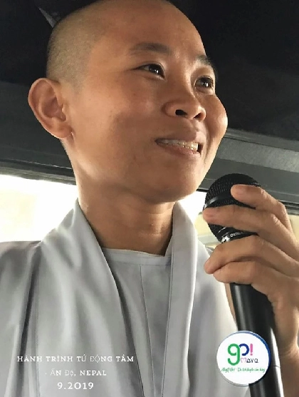
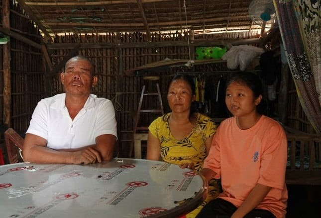

Giới thiệu
Đây là những câu chuyện tôi được nghe lại trực tiếp từ người thật, việc thật, và cũng có một số được sưu tầm từ những nguồn đáng tin cậy. Tôi chia sẻ với tất cả tấm lòng, mong rằng quý vị sẽ cảm nhận sâu hơn về luật nhân quả, và thấy được sự nhiệm mầu khó nghĩ bàn của Phật pháp.
Khổ nhất trong đời, không phải là thiếu tiền, sướng nhất, cũng không hẳn là giàu sang, mà đau khổ nhất, chính là không biết đến ánh sáng của Phật pháp. Có người sống cả đời mà chưa từng nghe đến Đạo Phật đó mới thật là nỗi khổ vô biên.
“Phật pháp rộng sâu, thật nhiệm mầu
Trăm ngàn muôn kiếp khó tìm cầu
Con nay nghe được, chuyên trì tụng
Nguyện hiểu Như Lai nghĩa nhiệm mầu.”
Cầu chúc quý vị luôn có những phút giây bình an, hạnh phúc, luôn được ánh sáng từ bi và trí tuệ của Phật pháp soi sáng trên từng bước đường đời.
Biết trước ngày mất
Ai cũng chết, nhưng chết trên giường bệnh, hay chết nhẹ nhàng là do mình chọn!
Tôi may mắn hữu duyên được quen biết một sư cô pháp danh Huệ An, ngài là một người tôi rất tôn kính. Ngài từng nhịn ăn 49 ngày liên tục, chỉ uống nước, rồi tu tập, và ngài không chỉ thực hiện một lần mà rất nhiều lần. Ngoài ra ngài còn tu tập nhiều pháp môn khác nữa.
Ngài cũng thường xuyên giải vong cho những người bị vong nhập, điều đặc biệt là ngài không hề lấy tiền cúng dường, nếu có lấy cũng chỉ vì phật tử họ quá quý mến, ngài dùng tiền đó lại đi làm việc thiện, giúp đỡ mọi người hoặc mua hoa quả thờ Phật, chứ bản thân thì nhu cầu rất thấp.
Sư Huệ An là người thường kể chuyện linh ứng về Phật pháp mà chính ngài trải qua, một trong những câu chuyện tôi ấn tượng nhất là về người cha của sư. Ông sống ít tin vào Phật pháp, nhưng sau này nhờ việc con gái mình xuất gia đi tu, ông bắt đầu thay đổi, và cũng tu tại gia được đâu đó 9 năm thì ông mất.
Điều đặc biệt, là ông biết trước ngày giờ chết 2 năm. Đến ngày mất, ông hẹn con cháu họ hàng đến nhà, sau đó ông tự tắm rửa sạch sẽ, tự thay đồ áo mới, sau đó, ông dặn dò người thân, rồi ông lên giường nằm, giơ tay lên và nói: "Chào mọi người, tôi về với Phật đây." Sau đó ông hạ tay xuống, và ra đi một cách thanh thản như thế.
Sau này sư Huệ An có vài lần mơ thấy cha mình ngồi trên hoa sen, và dặn dò lại sư các việc trong nhà.
Câu chuyện này nói lên sự nhiệm màu của Phật pháp, với Phật pháp bạn có thể chọn được nơi sinh ra, và chọn được cách ra đi.
Nếu chọn cách chết, thường là chọn cách chết nhẹ nhàng, tâm hồn tỉnh táo, lâm chung không chướng ngại.
Và khi chọn nơi sinh ra thường là chọn về cõi Tây Phương Cực Lạc, ở đây không còn sinh lão bệnh tử, không có đói khổ, hay hành hạ bởi bệnh tật, tai ương, không còn luân hồi sinh tử, tại đây không sinh ra từ bụng mẹ mà sinh ra từ hoa sen thơm ngát.
Để được như thế, cần có hành trang Tín – Nguyện – Hạnh.
Tín là tin vào lời Phật dạy, tin vào 48 đại nguyện của Phật A Di Đà, tin vào nhân quả, tin về cõi Tây Phương Cực Lạc. Và tin rằng, mình có khả năng vãng sanh.
Nguyện là ý muốn mãnh liệt, tha thiết được sinh về cõi Tây Phương Cực Lạc. Để vậy, chính mình phải thấy được cõi ta bà này đầy khổ đau, sinh lão bệnh tử, ái dục, vô thường. Hiểu được lục đạo luân hồi mệt mỏi không bao giờ dứt.
Hạnh là sự thực hành, cốt lõi là niệm Phật A Di Đà với tâm chí thành, chuyên nhất, không xen tạp.
Khi đầy đủ Tín – Nguyện – Hạnh, thì chắc chắn được Phật tiếp dẫn về Cực Lạc sau khi mạng chung, như lời nguyện thứ 18 trong 48 đại nguyện của Phật A Di Đà đã khẳng định.
Tuy nhiên, đừng chủ quan, bởi nghiệp mỗi người mỗi khác, đến lúc lâm chung, bị nghiệp lực nó ngăn cản, mê mờ, cũng gây khó khăn cho việc vãng sanh.
Có cô phật tử kia, hơn 50 tuổi, cũng hay đi chùa, niệm Phật và làm thiện rất nhiều, bỗng một ngày, sáng vẫn lên chùa niệm Phật, nhưng trưa về đổ bệnh, đưa đi bệnh viện mà chỉ còn biết la hét, như có cái gì đó ghê gớm lắm đang hành hạ tâm trí, sau đó thì mất trên giường bệnh.
Do đó, Tín và Nguyện phải đủ, nhưng Hạnh phải thật tinh tấn, niệm Phật để tiêu nghiệp, không để oan gia trái chủ nó ngăn cản mình về Tây Phương Cực Lạc. Đừng có lơ là chủ quan.
Trong pháp môn tịnh độ, còn có phương pháp trợ niệm, nghĩa là sắp lâm chung, có người thân hoặc quý sư niệm Phật bên cạnh, thì khả năng cao vẫn được vãng sanh, nhưng muốn có được cái duyên này thì nghiệp cũng phải tiêu bớt thật nhiều, chứ không đơn giản.
Vì thế, phải luôn tinh tấn niệm Phật: Nam Mô A Di Đà Phật, Nam Mô A Di Đà Phật, Nam Mô A Di Đà Phật,… Lúc đi đứng nằm ngồi, niệm được cứ niệm vừa tiêu nghiệp, vừa để an yên, lại vừa để được vãng sanh Tây Phương.
Lời nguyện đơn giản mỗi ngày như sau:
“Nam Mô A Di Đà Phật, con nguyện vãng sinh Tây Phương Cực Lạc, xin Phật từ bi tiếp dẫn. Nguyện cầu A Di Đà Phật thọ ký, cho con biết trước ngày giờ lâm chung, tâm hồn tỉnh táo, lâm chung không chướng ngại.”
Niệm Quán Thế Âm, vượt qua sinh tử
Đây là bình luận tôi đọc được trên YouTube, của tài khoản tên là tammynguyen6845, nội dung chính như sau:
Sáng 8 giờ, ngày 30 tháng 1 năm 2002. Tôi vỡ nước ối.
Gia đình vội đưa tôi đến bệnh viện. Nằm đó cho đến tám giờ tối, tôi quyết định phải mổ. Bác sĩ nói nước ối trong bụng gần như đã cạn, nếu để lâu sẽ rất nguy hiểm cho em bé.
Ca mổ diễn ra bình thường. Nhưng đến khoảng 9, 10 giờ đêm, tôi bắt đầu sốt. Cơn sốt không bình thường. Nó lạnh, không phải cái lạnh ngoài da mà là cái lạnh ngấm tận xương tủy. Bác sĩ tăng nhiệt độ phòng, đắp chăn dày, dùng thiết bị sưởi… nhưng tôi vẫn run cầm cập, không thể nói, không thể cử động. Tay chân như tê liệt, không còn cảm giác. Chỉ còn cái đầu là biết mình đang tỉnh, đang run, đang bất lực.
Nước mắt chảy ra.
Chồng tôi nằm trên ghế sofa sát giường bệnh. Anh chỉ cách tôi chưa tới một sải tay, vậy mà tôi không thể gọi anh, không thể thốt ra tiếng nào. Ngay bên tay tôi là chiếc chuông gọi y tá, một cử động nhỏ thôi, vậy mà tôi không thể bấm.
Tôi nghĩ đến đứa con gái bé bỏng mới chào đời chưa đầy một ngày tuổi. Tim tôi thắt lại. Nếu tôi chết, ai chăm sóc con? Nó còn chưa kịp bú mẹ lần thứ hai...
Nước mắt lại trào ra. Tôi tuyệt vọng.
Bỗng một câu niệm Phật vang lên trong tâm trí tôi, không biết từ đâu, chỉ là một tiếng gọi vô thức:
“Nam Mô Quán Thế Âm Bồ Tát cứu khổ cứu nạn.”
Tôi niệm thầm, lặp đi lặp lại. Không biết bao nhiêu lần. Trong tâm chỉ còn một lời khấn đơn giản:
“Xin Bồ Tát cứu con. Con của con cần mẹ. Xin đừng để con chết lúc này.”
Giữa lúc thân xác lạnh giá như đóng băng, bất ngờ cánh cửa phòng nhẹ nhàng mở ra. Một cô y tá bước vào.
Tôi thấy rõ cô, khuôn mặt dịu dàng, tóc ngắn, mặc áo bông xanh trắng. Cô không nói gì vội, chỉ đi thẳng đến bên giường tôi. Rất nhẹ nhàng, cô vòng ra phía đầu giường, đặt đôi tay lên vai tôi, xoa nhẹ. Giọng cô dịu như gió thoảng:
“Nhắm mắt lại, ngủ đi con...”
Tiếng Việt. Rất rõ.
Tôi muốn cảm ơn, nhưng hai mí mắt trĩu xuống. Cảm giác bình yên lạ thường lan khắp thân thể, như vừa được ôm vào vòng tay mẹ. Tôi chìm vào giấc ngủ. Một giấc ngủ yên ổn, không còn đau đớn.
Sáu giờ sáng hôm sau, tôi tỉnh dậy. Nhìn đồng hồ, tôi biết mình đã sống sót qua cơn sốt khủng khiếp ấy. Tôi đánh thức chồng, giục anh sửa soạn còn đi làm. Trước khi anh rời phòng, tôi nhắc:
“Anh nhớ cảm ơn cô y tá đêm qua. Cô ấy giúp em rất nhiều. Cô là người Mỹ, nhưng nói tiếng Việt. Mặc áo bông xanh trắng, tóc ngắn.”
Chồng tôi đi ra một lúc, rồi quay lại, giọng ngập ngừng:
“Anh đã hỏi rồi. Bệnh viện không có y tá hay bác sĩ nào là người Việt. Đêm qua, vào khoảng giờ đó, không ai được phép vào phòng nếu bệnh nhân không có yêu cầu.”
Tôi lặng người. Nước mắt lại rơi, một cảm xúc khó gọi tên, vừa biết ơn, vừa xúc động, vừa thấm thía một điều gì rất sâu sắc trong tim.
Tôi hiểu. Không cần hỏi nữa.
Nam Mô Đại Bi Quán Thế Âm Bồ Tát.
Cô gái hết ung thư tủy nhờ Chú Đại Bi
Đây là câu chuyện có thật (thời gian, địa điểm rõ ràng) của Nguyễn Huỳnh Anh Đoan, pháp danh Hạnh Tuệ, được giảng tại Quán Âm Cứu Khổ Kỳ 1, chùa Long Phước.
Vào năm 2011, bé tròn 19 tuổi, đang học lớp 12 trường Quốc tế. Nhà bé ở đường số 12, phường Bình Trị Đông, quận Bình Tân, thành phố Hồ Chí Minh.
Năm 2009, một hôm cô bé cảm thấy đau lưng, đau cột sống, gia đình cứ nghĩ do bé chơi thể thao nhiều quá nên bị đau không để ý đến. Thế nhưng, hai chân cô bé ngày càng tê cứng, không đi đứng được, chụp X-quang không phát hiện bệnh.
Cũng may! Nhờ người dì ruột bên Úc về thăm nhà, thấy cháu như vậy thương quá nên bảo đi chụp MRI. Không ngờ khi gia đình đưa cô đến bệnh viện khám, chụp MRI thì phát hiện ra cột sống cô bé có một cục bướu rất to, chuyển sang di căn, chính là ung thư tủy. Cục bướu đã ăn mòn đến đốt xương thứ tám và thứ mười.
Gia đình đưa cô bé đi khám bệnh viện nào cũng có kết quả tương tự, toàn bộ các hồ sơ xét nghiệm các bác sĩ đều bảo là bướu ác tính, ung thư di căn nên không còn cách cứu chữa, chỉ còn sống tối đa là sáu tháng.
Mẹ bé vô cùng đau đớn, vì chị chỉ có một đứa con. Còn riêng cô bé do gia đình giấu, nên không biết mình bị bệnh gì mà đi đứng và ngồi đều không được. Cuộc sống của cô bé có kéo dài được sáu tháng hay không chưa biết được, nhưng chỉ vài ngày sau biến chứng sang tràn dịch màng phổi.
Gia đình cô không biết Phật pháp vì theo một tôn giáo khác, nhưng may mắn cho cô bé có người dì ruột lại là Phật tử thuần thành tin sâu Tam bảo, pháp danh Diệu Quang.
Dì nói với mẹ bé: “Chị ơi! Bệnh của bé Đoan không còn cách nào khác, chỉ có nhất tâm niệm Phật mà thôi. Chị hãy lập bàn hương án giữa trời, đốt nhang đèn không để tắt và khấn Bồ Tát Quán Thế Âm.”
Cô bé Hạnh Tuệ sợ hãi vì bệnh nặng, nên khi nghe dì khuyên, cô đặt hết niềm tin vào Phật pháp, hành trì mỗi đêm từ ba đến bảy biến Chú Đại Bi.
Về người dì vừa niệm Phật cầu khấn cho bé hết bệnh, vừa liên lạc với bệnh viện ở Thái Lan để tìm cách chuyển cháu sang bên đó. Trong thời gian ba ngày chờ bệnh viện Thái Lan trả lời, dì đi lên chùa chí thành cầu Bồ Tát Quán Thế Âm rồi xin quả táo và hai chai nước suối trên bàn Phật về cho cháu uống. Không ngờ cô bé vừa uống xong liền ói ra rất nhiều thứ lạ.
Sau đó, người dì trì Chú Đại Bi vào trong nước cho cháu uống và thoa nước lên lưng cô bé. Đến ngày thứ ba, cô bé hơi khỏe lại và đi lại vài bước, đồng thời bên Thái Lan gọi điện thoại chấp thuận cho cháu sang đó phẫu thuật.
Tới bệnh viện Thái Lan, cô bé được các bác sĩ xét nghiệm lại. Thật là kỳ diệu! Gia đình mừng rơi nước mắt, vì cô bé không còn một tế bào ung thư, nhưng vẫn phải mổ để lấy xương bánh chè và chắp vá, nẹp lại mấy đốt xương do ung thư ăn mòn.
Cuộc phẫu thuật khá phức tạp, nên phải mất khoảng tám tiếng. Ở đây, người dì vẫn tiếp tục chí thành cầu khấn Bồ Tát Quán Thế Âm cho cô bé vượt qua tai nạn. Kết quả mổ chỉ có hai tiếng rưỡi thì các bác sĩ báo ca mổ thành công tốt đẹp, vượt ngoài dự tính vì không cần phải lấy xương bánh chè nẹp lên, năm cục bướu trong xương đến phổi đã được lấy ra hết. Hiện nay cô bé đã hoàn toàn khỏe mạnh, có thể chơi lại các môn thể thao mạnh, lại tinh tấn trì Chú Đại Bi mỗi đêm.
Câu chuyện của cô bé Hạnh Tuệ cũng như thế. Nhờ cô bé lâm bệnh nặng mà làm thay đổi cuộc sống tâm linh của gia đình, nhất là mẹ cô, hoàn toàn hướng về Phật pháp, làm nhiều việc thiện. Tất cả người dân hàng xóm xung quanh nhà cô thấy được sự nhiệm màu của Phật pháp, nên ai nấy đều phát tâm, quy y Tam bảo.
Vượt qua ung thư máu
Câu chuyện diệu kỳ về Chú Đại Bi và Chú Dược Sư giúp vượt qua bệnh tật (bệnh ung thư máu).
Chuyến hành trình đến với Tứ Động Tâm – Đất Phật Ấn Độ lần thứ 4, bên cạnh những cảm xúc bồi hồi gắn với từng nơi chốn thiêng liêng, ấn tượng sâu sắc còn nằm ở những câu chuyện từ những nhân vật là khách tham gia chuyến đi này.

Vị sư cô trẻ trong hình đây bảo rằng với cô, được một lần tìm về Quê Cha – quê hương của Đấng Từ Phụ Thích Ca Mâu Ni của cô là một điều cô chưa bao giờ dám mong ước, đơn giản vì nó luôn nằm ngoài khả năng của cô. Nhưng nhờ tấm lòng của một vị mạnh thường quân, cùng đi với cô trong tour, rốt cục cô đã đến được Đất Phật.
Trong những ngày dọc dài đường gió bụi của hành trình, chúng mình thường hay có những phần chia sẻ cùng nhau. Và nhờ vị mạnh thường quân kiên trì thuyết phục, cô đã rụt rè lên chia sẻ câu chuyện đời mình, và chúng mình đã thật bất ngờ khi biết rằng, người ni này đã từng kiên cường chống chọi căn bệnh hiểm nghèo: ung thư máu!
Sư cô kể, từ nhỏ cô đã sống cùng bà ngoại trong một hoàn cảnh đạm bạc ở một vùng quê. Năm cô vừa đậu vào đại học, nhập học được ba tháng thì bác sĩ chẩn đoán: cô bị ung thư máu giai đoạn cuối, chỉ được sống thêm khoảng 2 tháng nữa mà thôi. Mà tiền thì nhà nghèo quá cũng không có để mà điều trị nữa.
Thế là mỗi ngày cô cứ tìm ra ngồi gốc cây vú sữa ở nhà quê mình và nhìn lên trời, tự hỏi: “Vì sao mình phải chết? Mình còn ước mơ nhiều lắm mà!” Cô thấy cô cần phải sống, ít nhất để còn báo hiếu cho bà ngoại, người một mình nuôi cô lớn khôn.
Đó là vào khoảng Trung thu cách đây 17 năm.
“Nhà con nghèo lắm, từ nhỏ đến lớn nào có biết ăn Trung thu là gì, thậm chí tới bây giờ còn không biết ăn bánh trung thu là gì nữa. Thế nhưng đêm đó, con cảm nhận được ánh trăng trung thu thực sự đẹp lắm. Hồi nào giờ nghe sách vở tả ‘Trăng sáng vằng vặc’, thì đêm đó con biết cái ‘vằng vặc’ là cái gì!”
Và trong cái vằng vặc của ánh trăng đêm rằm Trung thu năm ấy, cô nhớ tới ông Bụt trong những chuyện cổ tích mà cô nghe kể. Thế là, cô bèn quỳ xuống, hướng ánh trăng và khấn:
“Lạy Bụt, nếu Bụt thấy con sống mà còn có ích gì được cho xã hội, xin Bụt cho con được sống!”
Những ngày tháng tuyệt vọng đó, cô gái trẻ không còn nói chuyện với ai, kể cả người thân nhất là bà ngoại.
Một ngày, cô nói: “Ngoại ơi con không ăn mặn nữa, con chuyển qua ăn chay. Ngoại cho con ít tiền để con đi mua bông (hoa) cúng Phật.”
Điều này làm ngoại cô ngạc nhiên, vì nào giờ cô nào có biết đi chùa là gì đâu. Mua chục hoa huệ trắng, cô đạp xe đến một ngôi tịnh xá ở khu cô ở, gặp một vị sư cô luống tuổi hiền từ, cô bèn đưa bó hoa huệ cho sư cô cúng Phật dùm cô. Vị sư cô già bèn hỏi: “Bé có muốn lên viếng Phật không?” Cô dạ, bèn đi theo vị sư cô kia lên chánh điện. Đó cũng là lần đầu tiên cô viếng Phật.
Cô bảo rằng, cho đến tận bây giờ, bất kỳ khi nào nhắm mắt lại và hồi tưởng lại khoảnh khắc ấy, cô vẫn nhớ như in gương mặt hiền từ của bức tượng Đức Phật Thích Ca trong chánh điện tịnh xá ấy ngay khi cửa chánh điện vừa được mở ra, và vầng sáng xanh diệu kỳ nào đó chiếu rọi vào tâm cô, khiến tâm cô như bừng sáng.
Thế là ngay lập tức, cô liền quỳ xuống, lặp lại lời khấn mà cô đã dành cho Ông Bụt đêm trăng năm nào.
“Phật ơi, nếu Phật thấy con sống mà còn có ích gì được cho xã hội, xin Phật cho con được sống!”
Và hơn thế nữa, cô còn phát nguyện, nếu quả thật cô được sống tiếp, cô sẽ xuất gia. Vì trong cái đầu khá ngây thơ của cô gái 18 tuổi lúc đó, chỉ có các người tu thì mới có thể làm được những điều từ bi nhất.
Kể từ đó, mặc cho sức khỏe ngày càng cạn dần, mỗi ngày cô đều cố gắng đạp xe đến ngôi tịnh xá ấy. Cô lặng lẽ quét hết sân chùa, và không như những bạn gái đồng tuổi khác, cô cứ quét xong bèn cứ tìm lên ngồi yên ở một góc chánh điện.
Một ngày, vị sư cô từng gặp cô ngày đầu tiên ấy bước lại, hỏi thăm cô ở đâu, làm gì mà mỗi ngày đều tìm đến chùa như vậy. Cô gái trẻ thành thật thú nhận về bệnh tình hiểm nghèo của mình.
Vị sư cô khuyên: “Thôi thì cuộc đời này vô thường như vậy, con nên về trì Chú Đại Bi đi, và nếu con thật lòng tin thì khi nào con xả bỏ báo thân này, thì nó cũng nhẹ nhàng và đỡ đau đớn hơn.” Cô gái vâng lời sư cô, về nghiêm túc đọc theo.
Sau vài ngày, sư cô lại đưa tiếp cho cô cuốn Chú Dược Sư, và Chú Như Ý Cát Tường. Cô lại tiếp tục ngoan ngoãn đọc theo, dù lúc ấy cô cũng chẳng hiểu chữ nào trong mỗi câu chú.
Nói nôm na, những câu những chữ ấy một phần như những “cọng cỏ cứu mạng” cuối cùng mà cô chỉ còn biết bám víu vào. Hơn nữa, những lúc đêm ngày miệt mài trì (đọc) hết chú này đến chú khác, lượt này sang lượt kia, cô dường như đã “quên” luôn những cơn đau đớn dằn xé cơ thể bệnh tật của cô, mà sau này đi theo học Phật pháp cô mới biết đó là “quán” – nghĩa là khi ta tập trung toàn bộ sự chú ý về một điều gì đó cao đẹp, ta sẽ không còn tâm trí mà để ý tới những cơn đau nữa, dù chúng vẫn còn đó.
Bác sĩ cho cô thời hạn sống cuối cùng là hai tháng, vậy mà… hai tháng sau, cô vẫn chưa chết! Rồi bốn tháng, rồi sáu tháng…
Cho đến đúng rằm Trung thu năm sau, cô xin ngoại quay lại Bệnh viện Huyết học TP.HCM để tái khám. Kết quả cho ra thật bất ngờ: từ “Ung thư máu giai đoạn cuối” vào năm ngoái, các chỉ số năm nay chỉ còn là “Thiếu máu di truyền”.
Vị bác sĩ nhìn vào kết quả của hai năm và ngạc nhiên hỏi cô đã uống thuốc gì để bệnh thuyên giảm diệu kỳ như vậy, cô gái thưa với bác sĩ rằng: “Dạ, con không có uống thuốc gì hết.”
Niệm Phật hai năm, biết trước ngày giờ vãng sanh
Bản thân là dược sĩ, thuốc gì trị bệnh gì Thu đều biết, vậy mà lần này dù đã kinh qua nhiều loại thuốc ho, từ nhẹ tới nặng, kể cả kháng sinh nhiều đợt, những cơn ho tới tấp vẫn không ngừng hành hạ cô suốt một thời gian dài.
Có những hôm, không gian tĩnh mịch bị xé toác bởi những cơn ho xuyên thủng màn đêm. Họng khô khốc, mặt đỏ phừng, Thu vừa khổ vì bị bệnh tật hành, vừa ngại vì chẳng những khiến cả nhà mà thậm chí cả xóm mất ngủ lây.
Anh Mạnh – chồng của Thu thấy vợ lên cơn ho, lóc cóc mò dậy:
– Đừng chần chừ nữa, sớm mai em sắp xếp công việc, anh đưa em lên Hà Nội khám.
– Chữa nhiều nơi, uống đủ loại thuốc rồi … mà …có …hết đâu” – Thu cố nén cơn ho.
– Chẳng nhẽ cứ để thế này? Lên bệnh viện tuyến trên biết đâu họ chữa được.
Thu mệt lả, gục đầu xuống, hơi thở nặng nhọc, chưa kịp lấy lại sức thì một tràng ho lại tiếp tục, cứ thế tái diễn suốt cả đêm. Chỉ thi thoảng, cô mới chợp mắt được vài phút.
Sáng sớm hôm sau, khi mặt trời còn chưa mọc, cô lay chồng mình dậy, hơi thở ngắt quãng như cá mắc cạn:
– Anh à… đưa em lên Hà Nội.
Chồng cô cũng chẳng ngủ được mấy, tỉnh giấc ngay, nhanh chóng gói ghém đồ đạc, bắt chuyến xe sớm nhất lên thủ đô, hy vọng với máy móc tân tiến, chuyên môn cao, bác sĩ ở đây có thể giúp vợ anh chấm dứt tình trạng này.
Ngồi ở hàng ghế chờ, tiếng ho của Thu vang dội cả dãy hành lang, khiến ai cũng phải chú ý. Những người chờ khám khác ái ngại thay, nhường cô vào trước.
– Em là người ho từ nãy giờ ở bên ngoài đó à?
– Dạ vâng.
– Để làm các xét nghiệm xem thế nào nhé? Nghe tiếng ho của em dữ quá.
– Bác sĩ giúp em. Em uống đủ loại thuốc cũng không khỏi.
Chồng Thu tay xách nách mang, dẫn vợ đi chụp chiếu từ phòng này sang phòng khác.
Nhiều ngày sau bệnh viện mới trả kết quả. Tờ phiếu chuẩn đoán được ghi vào tháng 2 năm 2022: Bệnh nhân Phạm Thị Thu, 38 tuổi, ở Hà Nam mắc ung thư phổi. Theo như bác sĩ dự tính, cô chỉ sống được thêm ba tháng nữa.
Trời đất hoàn toàn sụp đổ trước mắt. Gia đình vốn dĩ khó khăn, nuôi ba đứa con đối với vợ chồng cô đã là một nỗi nhọc nhằn vất vả.
Thu không oán thán, nhưng ra đi ở cái tuổi còn trẻ như thế này đối với cô là điều quá bất hạnh.
Nhiều ngày sau, trong căn nhà ấy bao trùm một bầu không khí ảm đạm. Chồng Thu không cam tâm, trong nhà có đồ gì giá trị anh đem bán hết lấy tiền thuốc thang cho vợ, nhưng tình hình không có gì tiến triển, thậm chí cô ngày càng yếu đi.
– Thôi anh đừng buồn, đừng cố gắng thêm làm gì. Nhà mình cũng chẳng còn gì để mà bán nữa đâu. Anh phải mạnh mẽ còn nuôi ba con khôn lớn. Em chấp nhận cái chết này rồi.
Hai mắt chồng cô đỏ hoe, nhưng không dám rơi nước mắt trước mặt vợ.
Thu tiếp lời, vừa ho vừa nói:
– Em muốn lên chùa Hưng Long ở Phủ Lý. Trên đó có đạo tràng Minh Tâm của cô Diệu Châu. Em muốn tìm hiểu Phật Pháp.
– Ừ được. Mai anh đưa em lên. Biết đâu Phật Pháp giúp được em điều gì đó.
Trời hôm nay sáng và trong trẻo, cái nắng sớm đầu ngày không gay gắt, nó dịu dàng ôm ấp lấy tâm hồn cô.
Trong khung cảnh bình yên của mái chùa, tiếng chuông ngân hòa cùng tiếng niệm Phật đâu đó từ phía trong khu giảng đường vang ra ngoài sân, chợt cô Diệu Châu từ trong bước ra:
– Em đến rồi, vào đi thôi, còn đứng ngoài đó làm gì?
– Dạ. – Thu đáp nhỏ rồi lặng lẽ bước vào theo sau.
Biết tình cảnh của Thu, cô Diệu Châu không ngại ngần chia sẻ đôi điều:
– Chết không phải là hết đâu. Chúng ta chỉ rũ bỏ cái thân xác tạm bợ này rồi lại đổi lấy thân khác mà sống tiếp một cuộc đời mới. Cuộc đời tiếp theo thế nào do hành vi thiện ác của em quyết định.
Vào địa ngục, làm súc sinh hay làm ma vất vưởng thì chẳng ai muốn, làm người thì cũng khổ như em đã thấy, lên trời rồi cũng phải xoay vòng trở lại các cõi khác mà thôi.
Ánh mắt Thu vừa mệt mỏi vừa ngơ ngác:
– Vậy em phải làm gì? Mong cô chia sẻ. Em chẳng còn bao lâu nữa.
– Chi bằng về Cực Lạc là tốt nhất. Ở đó chẳng có sinh tử, toàn hưởng điều vui, không có đau khổ như ở đây.
– Cực Lạc, em từng nghe người ta nhắc tới, nhưng không biết gì về nơi đó cả. Nó có thật sao cô?
– Rất nhiều trường hợp người thật việc thật được ghi nhận ở khắp nơi. Nên chắc chắn phải có chứ. Phật A Di Đà phát nguyện lớn, tiếp dẫn tất cả những ai tin tưởng, mong muốn được về cõi của Ngài. Em cứ chân thành niệm Phật chăm chỉ nữa là được.
Thu trầm ngâm, rồi trong ánh mắt dần lấp lánh một niềm hy vọng gì đó cho tương lai phía trước.
– Thôi, từ từ rồi em có thể tìm hiểu thêm. Giờ cứ vào ngồi niệm Phật với mọi người trong đạo tràng đã nhé.
– Dạ vâng. Em cảm ơn.
Thu chưa từng tìm hiểu Phật Pháp, nhưng có lẽ do nhân duyên gì đó trong những kiếp trước, khiến cô tin tưởng, muốn niệm Phật cầu sinh Cực Lạc ngay khi nghe cô Diệu Châu khai sáng.
Sau khi niệm Phật cùng đạo tràng buổi đầu tiên, trong lòng cô phấp phới một niềm vui an lạc. Cứ thế, Thu siêng năng niệm Phật cùng bạn đạo suốt sáu tháng liên tiếp.
Mặc dù bệnh vẫn còn, nhưng những cơn ho dần thưa thớt, sức khỏe của Thu ổn định hơn.
Cả gia đình thấp thỏm với cái mốc thời gian ba tháng mà bác sĩ dự tính, thế nhưng đã sáu tháng trôi qua.
Thu lựa chọn tiếp tục niệm Phật miên mật ngày đêm, không ngoại trừ bất kể thời gian nào, đi đứng nằm ngồi, bất kể đang làm gì cô đều cố gắng niệm danh hiệu “Nam Mô A Di Đà Phật”.
Dưới ánh hoàng hôn của buổi chiều tà, Thu nắm lấy tay chồng, ngắm nhìn những đứa con đang hóng cơn gió chiều ngoài sân:
– Đằng nào em cũng phải ra đi. Giờ em chỉ có một ước nguyện duy nhất, là về Cực Lạc. Anh và các con cố gắng sống tốt nhé.
Chồng Thu chẳng biết thế nào, nhưng thấy tâm lý vợ an ổn, đỡ mệt hơn trước, nên cũng động viên cô niệm Phật.
Thời gian thấm thoắt trôi qua, vèo một cái đã là tháng 4 năm 2024, hơn hai năm kể từ ngày phát hiện ra bệnh.
Khi đó là tiết thanh minh, Thu đột nhiên muốn về quê, thắp nén nhang cho các cụ.
Trở về nhà, người Thu mệt lả, cảm nhận được cơ thể có chút khác lạ, liền mời đạo tràng Minh Tâm qua hộ niệm cho mình mỗi tối.
Không khí căn nhà nhỏ của gia đình Thu mấy ngày này vừa trầm buồn vừa rạo rực.
Bốn cha con vẫn phải gắng gượng để có thể chấp nhận sự thật rằng người vợ, người mẹ của mình chẳng còn sống cùng mình thêm bao lâu nữa. Mặc dù hơn hai năm đã là khoảng thời gian dài hơn rất nhiều dự tính ban đầu.
Còn Thu trong quãng thời gian đó càng thêm tin sâu vào pháp môn Tịnh Độ, một lòng buông xuống tất cả, tha thiết chờ ngày đức Phật A Di Đà tới đón cô về Cực Lạc. Cả đạo tràng cũng cùng một chí nguyện giúp đỡ cô.
Sau ba buổi trợ niệm, tới buổi thứ tư, khi cô Diệu Châu vừa khai thị xong, Thu chẳng nói gì nhiều, chỉ thì thào:
– Ngày mai em đi rồi.
Cô Diệu Châu như hiểu ý, khẽ mỉm cười, hỏi lại:
– Ngày mai em đi đâu?
– Em đi Cực Lạc.
– Em chắc không?
Thu không trả lời, chỉ khẳng định thêm lần nữa:
– Mai em đi.
Chồng Thu vội vã gạt đi:
– Đi đâu chứ, em cứ niệm Phật nhiều là sẽ khỏe hơn, còn ở cùng với bố con anh thêm nữa.
Khi đạo tràng ra về, Thu gượng dậy nhìn chồng, biết anh khó lòng chấp nhận nổi mai đây thôi sẽ phải xa cô:
– Tối mai em đi nhé.
– Em đừng nói linh tinh nữa. Ngủ một giấc cho lại sức.
Tối hôm sau, vẫn như mọi hôm, cô Diệu Châu cùng đạo tràng tới hộ niệm.
Thu nằm đó, đang lẩm nhẩm niệm Phật trong đầu, thấy mọi người bước vào, nhìn qua một lượt từng người như muốn nói lời cảm ơn, rồi trút hơi thở cuối cùng, nhằm ngày 13 tháng 4 năm 2024.
Chồng Thu chứng kiến vợ ra đi bất ngờ, chân tay luống cuống, tâm lý hoang mang, không biết phải làm gì, vừa khóc vừa nói:
– Thu ơi, hôm qua em bảo anh tối nay em đi, anh tưởng em nói lung tung, ai ngờ em đi thật sao.
Còn đạo tràng Minh Châu, vì đã được Thu báo trước từ tối qua, lại biết rõ nhiều trường hợp biết trước ngày giờ vãng sinh như vậy, nên không có gì ngạc nhiên cả, tiếp tục trợ niệm cho Thu liền một mạch tới sáng (Theo quy tắc của pháp hộ niệm là tuyệt đối không đụng chạm đến thân người vừa lâm chung trong khoảng thời gian 8 tiếng, và tiếp tục hộ niệm trong thời gian này, quý vị có thể nghiên cứu thêm về phương pháp hộ niệm).
Gương mặt Thu khi ấy trông rất tươi, khuôn miệng mỉm cười nhẹ nhàng, viên mãn.
Chồng Thu sau khi chứng kiến vợ mình vãng sinh đúng như ngày giờ cô thông báo, nhất là thân tướng lúc lâm chung mềm mại, rạng rỡ chưa từng thấy qua, liền tin tưởng Phật Pháp.
Trong những tuần thất của Thu, mấy cha con cùng ngồi niệm Phật với đạo tràng.
Biết vợ được về cõi an vui, chồng cô không còn sầu khổ nữa.
Sau thời khóa niệm Phật, anh tỏ bày với cô Diệu Châu:
– Phật pháp màu nhiệm. Sau này mấy bố con cũng sẽ chăm chỉ niệm Phật và đến đạo tràng nhiều hơn. Con và các cháu sẽ hướng tâm về Phật Pháp để được nhiều lợi ích như thế.
Cả đạo tràng hoan hỷ vì những lời nói mộc mạc chân thành của chồng Thu. Họ đã giúp Thu hoàn thành ước nguyện, gieo duyên Phật Pháp cho người thân còn ở lại của cô, rồi mai đây cũng được hưởng ánh sáng từ bi an lành nơi Phật Pháp.
Tĩnh Như, viết lại từ lời kể của Hoàng Văn Mạnh – chồng cô Phạm Thị Thu.
Trong Kinh Vô Lượng Thọ, Phật A Di Đà có phát 48 lời đại nguyện, mà nguyện thứ 18 "Nếu có chúng sinh nào trong giờ phút lâm chung tưởng nhớ đến danh hiệu ta xưng niệm từ 1 đến 10 niệm, nếu ta và các Thánh chúng không đến đưa tay tiếp dẫn người đó về Tây Phương Cực Lạc, ta thề không nhận ngôi chánh giác!”
Cõi Phật Tây Phương Cực Lạc có gì?
Ở đó bạn sanh ra là từ hoa sen thơm ngát, chứ không phải sinh ra từ bụng mẹ, nhơ nhớp và đau đớn.
Khi vừa sanh ra, bạn đã biết mình là ai, đây là đâu, biết kiếp trước của mình, chứ không phải như một em bé vừa sinh ra chỉ biết khóc.
Khi vừa sanh ra bạn đã có thân tướng tốt đẹp như Phật vậy.
Môi trường tuyệt vời, không có đêm tối, luôn sáng nhẹ, hương thơm tự nhiên tỏa khắp nơi, đất đai bằng vàng ròng, cây cối bằng châu báu, suối nước tám công đức chảy rì rào, tiếng chim quý ca hát pháp âm, không có âm thanh ác độc, thô tục, xấu xa.
Bạn không còn phải chịu cảnh sinh lão bệnh tử nữa.
Bạn không cần ăn uống mà thân tâm vẫn đầy đủ.
Ở đó không có chiến tranh, hận thù, không có sinh ly tử biệt, bệnh tật, thiên tai, ô nhiễm.
Mọi người đều thân thiện, thương yêu và giúp đỡ nhau, cùng hướng về giác ngộ.
Cho nên đây là đích đến của rất nhiều người tu tập, đặc biệt là những ai theo Tịnh độ tông.
Gặp Mẹ Quán Âm
Sư cô Huệ An mà tôi ngưỡng mộ, không chỉ vì tâm từ bi sâu rộng, mà còn bởi sư cô đã nhiều lần được gặp Mẹ Quán Âm.
Tôi may mắn được nghe chính sư cô kể lại những câu chuyện ấy. Mỗi lần nghe, tôi cảm thấy hạnh phúc như thể chính mình cũng vừa được gặp Mẹ Quán Âm.
Dưới đây là hai câu chuyện mà tôi rất tâm đắc. Do chỉ được nghe kể lại một lần, nên khi viết lại có thể không thể hiện trọn vẹn như khi sư cô trực tiếp kể. Tuy vậy, về nội dung thì hầu như không sai khác.
Chuyện thứ nhất: Chữa bệnh ung thư
Khi còn trẻ, sư cô Huệ An từng mắc bệnh ung thư và phải điều trị tại Bệnh viện Ung Bướu. Lúc đó, sư cô chưa xuất gia, chỉ là một cô gái bình thường.
Một ngày nọ, từ tầng cao của bệnh viện nhìn xuống đường, cô thấy một bà lão cõng trên lưng một cái bị – một loại bao bố cũ.
Bà lão gặp ai cũng la mắng, quát tháo. Cô gái nghĩ chắc là một bà cụ bị tâm thần, nhưng trong lòng lại khởi ý muốn xuống gặp bà, xem thử bà là người như thế nào.
Vài ngày sau, khi thấy bà lão đi ngang qua bệnh viện và vẫn đang lớn tiếng với người khác, cô quyết định xuống dưới bắt chuyện.
Khi bà lão gặp cô, bà bất ngờ nắm lấy tay cô, rưng rưng nước mắt nói:
“Con của mẹ khổ quá! Mẹ thương con nhiều lắm. Con cố gắng lên, đừng lo lắng. Chỉ cần vượt qua giai đoạn này thôi, con sẽ bớt khổ.”
Cô gái ngạc nhiên vô cùng. Vì sao bà lão lại đối xử thô lỗ với người khác, mà khi gặp cô lại dịu dàng, trìu mến đến vậy?
Từ đó, cô nhận bà làm mẹ, hai người thân thiết xưng hô mẹ - con, như thể đã quen nhau từ rất lâu.
Mỗi ngày, khi có thời gian, cô đều xuống dưới đi dạo với bà. Bà vẫn la mắng những người khác nếu ai đó trêu chọc hay nhìn không vừa mắt. Đúng là một bà già có phần kỳ lạ.
Hai người thường cùng nhau đi dạo, khi thì qua chợ Bà Chiểu, khi thì đến cầu Bông.
Trong những buổi trò chuyện ấy, bà lão dạy cô rất nhiều điều hay lẽ phải.
Điều khiến cô kinh ngạc là chiếc bị nhỏ bé trên lưng bà lại chứa đủ thứ: lúc thì bà lấy đồ ra nấu ăn, lúc thì lấy ra các dụng cụ linh tinh, dường như không thiếu thứ gì.
Một hôm, bà lấy ra vài quả chanh từ chiếc bị, vắt nước và pha cho cô một ly nước.
Đưa ly nước cho cô, bà dịu dàng bảo:
“Con ngoan, uống ly nước này cho mẹ nhé.”
Chiếc ly trông cũ kỹ và hơi lem luốc, khiến cô gái có chút ngập ngừng.
Bà lão liền nói:
“Con không uống ly nước này là con không thương mẹ rồi.”
Nghe vậy, cô gái xúc động, vâng lời và uống hết ly nước.
Và kỳ lạ thay, sau hôm đó, cô không còn gặp lại bà lão nữa.
Ít lâu sau, cô được bác sĩ thông báo đã khỏi bệnh. Không lâu sau đó, cô được xuất viện.
Về sau, khi đã xuất gia, học đạo và đọc nhiều kinh sách, sư cô Huệ An dần nhận ra: những điều bà lão từng dạy cô đều nằm trong kinh điển nhà Phật.
Và rồi sư cô hiểu ra: người mẹ ấy, không ai khác, chính là Quán Thế Âm Bồ Tát hiện thân.
“Oai lực trên đỉnh long vương
Bạch y tung giữa trùng dương bạc đầu
Tầm thinh khắp cõi khổ đau
Bồ Tát hóa hiện nhiệm mầu muôn nơi”
Nam Mô Quán Thế Âm Bồ Tát.
Chuyện thứ hai: Mẹ luôn luôn bên cạnh!
Lúc này, sư cô Huệ An đã xuất gia được một thời gian. Một lần nọ, sư được nhờ xuống trông coi một ngôi chùa ở Bến Tre thay cho một vị sư khác.
Khi đến nơi, sư trụ trì đã đi lo Phật sự ở chỗ khác nên sư cô không gặp được. Cả ngôi chùa rộng rãi chỉ còn lại một mình sư Huệ An.
Mỗi ngày, sư đều quét dọn, tụng kinh và thực hiện các Phật sự.
Tuy nhiên, ở một mình trong ngôi chùa lớn, sư vẫn cảm thấy bất an, lo lắng. Dù đã tu hành, nhưng thân vẫn là một người nữ yếu đuối, sư không khỏi băn khoăn: nếu chẳng may có trộm cướp hay sự cố gì xảy ra thì biết kêu ai?
Một đêm nọ, đang ngủ thì sư chợt tỉnh giấc. Sư thấy một vị sư khác đang đi từ trên cầu thang xuống.
Trong lòng nghĩ: "Chắc sư trụ trì đã về rồi!" Sư liền vội vàng định dọn dẹp lại chỗ ngủ cho ngăn nắp.
Nhưng chưa kịp làm gì thì vị sư kia đã lên tiếng:
“Cô không cần lo, tôi có chỗ của mình rồi.”
Lúc này, sư Huệ An nhìn sang bên cạnh thì ngạc nhiên thấy từ lúc nào đã có sẵn một cái đơn – một loại giường nhỏ dành cho chư Tăng Ni với đầy đủ mền, gối.
Điều kỳ lạ là sư cô không hề cảm thấy sợ hãi hay nghi ngờ, mà trong đầu chỉ tự hỏi: “Bây giờ là mấy giờ rồi nhỉ? Không biết hôm nay mình tụng kinh chưa ta?”
Ngay khi vừa nghĩ đến đó, vị sư kia mỉm cười, nói:
“Cô biết bây giờ là mấy giờ không? Đã 12 giờ khuya rồi đó. Hôm nay cô đi đám tang nhà ông Sáu, nhớ không? Cô cũng đã tụng kinh rồi mà.”
Sư cô nghe vậy chỉ cười nhẹ và gật đầu: “Ờ, đúng rồi ha.” Nhưng điều lạ là trong lòng vẫn không có chút thắc mắc nào, mọi thứ đều rất tự nhiên, bình yên.
Vị sư kia tiếp tục:
“Có tôi ở đây rồi, cô cứ yên tâm ngủ nhé.”
Nói xong, vị ấy lên nằm nghỉ trên cái đơn bên cạnh. Sư Huệ An cũng nằm xuống và tiếp tục ngủ ngon lành.
Sáng hôm sau, khi tỉnh dậy, sư không còn thấy vị sư kia đâu nữa. Chiếc đơn cũng biến mất như chưa từng tồn tại.
Nhưng trong lòng sư lúc ấy lại tràn đầy niềm vui, sự ấm áp và bình an sâu sắc. Tất cả lo lắng, bất an trước đó đều tan biến.
Ngay lúc ấy, sư cô đã nhận ra: vị sư đêm qua không ai khác chính là Mẹ Quán Âm, luôn hiện diện âm thầm, che chở và bảo hộ.
Từ đó, sư Huệ An vững tâm hơn trong việc chăm sóc ngôi chùa, thực hiện Phật sự và giúp đỡ những người xung quanh, với một niềm tin sâu sắc rằng: Mẹ luôn bên cạnh mình.
“Tu thành Bồ Tát Quán Âm
Viên Thông, Tự Tại, Diệu Âm cứu đời
Mười hai nguyện lớn sáng ngời
Từ bi, Trí Tuệ, độ người an vui.”
Thoát nạn nước cuốn
Nước trôi không bị chìm
Nhờ sức niệm Quan Âm
Được sống lâu thọ mạng
Nhờ Quan Âm hộ trì
Hồi mới lên 6, 7 tuổi, tôi và anh trai cứ mỗi buổi trưa cuối tuần hay trốn mẹ ra sông để tắm.
Một hôm gặp mùa mưa tháng Tám, nước lớn từ trên nguồn tuôn về quá mạnh khiến con đê trong làng bị vỡ, nơi khúc sông cạn bỗng dưng nước ngập, xoáy sâu và chảy xiết.
Cả hai anh em tôi đều bị cuốn theo dòng nước và vì sức yếu nên chúng tôi không sao gượng nổi để vào bờ.
Lúc bấy giờ tôi chỉ kịp nghe tiếng anh tôi nhắc: “Em ơi! Đừng sợ, niệm Phật Quan Âm đi!”, rồi anh tôi mất dạng.
Tôi cũng chìm ngập trong biển nước xoáy.
Nhờ lời nhắc niệm Phật Quan Âm của anh tôi, nên ý thức của tôi lúc đó rất bình tĩnh, sáng suốt và tôi nói thầm trong miệng: “Phật Quan Âm ơi! Cứu con với! Con mệt lắm rồi!”
Tôi cứ lẩm bẩm trong miệng hoài như thế không biết bao nhiêu lần, cho đến khi không còn biết gì nữa.
Tôi đã bị chết trôi? Không, tôi đã được Đức Quan Âm Bồ tát cứu và sống cho đến bây giờ.
Năm nay tôi đã 57 tuổi, kể ra tôi cũng thọ mạng đấy chứ.
Trong cơn mê man của một giấc ngủ dài, tôi nghe tiếng một ông lão gọi bên tai tôi: “Này con, thức dậy để đi tìm anh con về nhà. Mẹ, ba con, ông bà nội của con đang nóng lòng chờ hai anh em con về ăn cơm trưa đó”.
Nhờ tiếng gọi đó, tôi đã tỉnh ngủ.
Khi thức dậy, tôi thấy mình đang nằm trên một cồn cát trắng, sát bên cạnh một vùng nước mênh mông. Nhìn quanh bốn phía chẳng thấy nhà cửa, chẳng thấy bóng dáng người qua lại.
Nhìn vào thân thể, tôi bỗng thẹn thùng vì thấy mình trần trục, không có quần áo gì cả.
Nhìn vào ngực, tôi bắt gặp bức tượng nhỏ Quan Âm Bồ tát mạ vàng mà mẹ đã đeo vào cổ cho tôi khi trước.
Tôi mỉm cười, cầm bức tượng này vân vê trên tay, rồi nói: “Phật Quan Âm ơi! Anh của con đâu rồi? Nếu anh con bị nước cuốn trôi thì mẹ, ba, ông bà nội, ông bà ngoại con sẽ khóc đó. Con không muốn mất anh mình. Phật Quan Âm ơi! Xin chỉ cho con biết anh đang ở đâu để con tới dẫn anh về nhà kẻo mẹ lo. Mẹ thương hai anh em con lắm”.
Vừa cầu khẩn Đức Quan Âm vài tiếng, tôi ngẩng đầu nhìn ra phía sóng nước trùng khơi và thấy một con đò nhỏ đang thoăn thoắt đi về phía tôi.
Tôi reo lên mừng rỡ, chờ đợi và nhảy ra ôm lấy anh tôi khi đò vừa đến.
Anh tôi đến trên chiếc đò nhỏ với một ông lão.
Sau phút chốc, tôi ôm anh mình mừng mừng tủi tủi, quay lại thì không thấy chiếc đò và ông lão đâu nữa.
“Ồ, anh ơi! Chiếc đò và ông lão đi đâu mất rồi?”
Anh tôi cũng ngạc nhiên như tôi, cả hai anh em mở to mắt tìm kiếm.
Nhưng giữa cánh đồng nước mênh mông, vẫn im lìm không một bóng thuyền đò qua lại. Ông lão chèo đò biến mất, chiếc đò cũng không còn.
Anh tôi thuật lại rằng khi bị cơn nước đẩy, anh tôi không nhìn thấy tôi đâu cả, nên đã la lớn bảo tôi niệm Phật để được Phật Bà giúp đỡ.
Anh tôi biết mình sắp chết đuối và nhớ lời mẹ dặn là khi gặp tai nạn thì niệm danh hiệu Quan Âm để được Phật Bà cứu độ.
Lúc đó, anh tôi tin là có Phật Bà và Phật Bà rất linh thiêng, nên anh tôi không quá lo sợ.
Anh nhắm mắt và thầm niệm: “Nam Mô Đại Từ Đại Bi Cứu Khổ Cứu Nạn Linh Ứng Quán Thế Âm Bồ tát”.
Niệm chừng được mười lần danh hiệu Phật Bà thì anh tôi chẳng còn hay biết gì cả.
Khi tỉnh dậy, anh thấy mình đang nằm trên chiếc giường tre với bộ quần áo xanh mới, bên cạnh bếp lửa đang nấu nồi cháo trắng sôi sùng sục.
Trong nhà chỉ có một mình ông lão tuổi chừng 70, tướng mạo rất đẹp, miệng tươi cười như Phật Di Lặc.
Ông lão lấy cháo trộn với đường cát cho anh tôi ăn một tô lớn rồi khen anh tôi ngoan, giỏi, còn nhỏ mà biết tin Phật Bà Quan Âm.
Anh tôi hỏi: “Ông có biết Phật Bà ở đâu không?”
Ông lão cười và đưa tay chỉ vào trái tim anh tôi, ý như muốn nói Phật Bà ở nơi tâm này.
Ăn cháo xong, ông lão nói với anh là đi tìm tôi và sẽ đưa cả hai anh em về nhà.
Anh tôi ngồi trên chiếc đò nhỏ và ông lão đưa anh tới đây gặp tôi.
Tôi bảo anh: “Như vậy ông lão đó chính là Đức Quan Âm mà anh em mình thường nghĩ và niệm tên của Ngài lâu nay”.
Anh tôi gật đầu và thốt lên: “Ừ hơ, ờ hơ, anh có cảm giác là ông lão này lạ lùng lắm, không phải một người thường”.
Mặt trời chiếu lên cao, anh tôi cởi chiếc áo đang bận trùm lên mình tôi.
Hai anh em tôi dắt nhau về nhà một cách bình an.
Chuyện này xảy ra tại thôn Phường Sắn, năm ấy anh Hai tôi mới khoảng 9 tuổi.
Phường Sắn là một thôn nhỏ thuộc làng Long Hưng, Hải Lăng, Quảng Trị, nơi tôi sinh ra và lớn lên.
Nguyễn Năng Diêu, anh Hai tôi ghi lại chuyện này trong nhật ký của mình. Tôi cung kính chép lại nơi đây để cống hiến đến quý thân hữu xa gần trải nghiệm về sự cảm ứng gia trì thật vi diệu của Đức Quán Thế Âm Bồ tát.
Trôi dạt 4 ngày, thoát chết nhờ niệm Phật
Trước căn nhà tranh đơn sơ, một đám đông tụ họp xôn xao bàn tán.
Trong số đó có một người phụ nữ ôm hai đứa con nhỏ, vẻ mặt bồn chồn, đó là vợ của anh Trần Văn Việt, một ngư dân 43 tuổi, sống ở ấp Hòa Hiếu 1, xã Định Hòa, huyện Gò Quao, tỉnh Kiên Giang.
Cách đây mấy hôm, chị đã nhận được tin báo từ chủ ghe, rằng chồng chị đã rơi xuống biển và chết mất xác.
Chị đau đớn khóc than, chấp nhận sự thật đau xót rằng chồng mình đã vĩnh viễn nằm dưới lòng biển cả.
Nhưng rồi một kỳ tích đã xảy ra, khiến chị và họ hàng lối xóm nghe tin mà không dám tin vào tai mình: anh Việt vẫn còn sống sau 4 ngày đêm chơi vơi giữa biển cả, không phao, không đồ ăn, không nước uống.
Thế nên họ tập hợp lại ở đây đón anh trở về. Phải nhìn tận mắt, sờ tận tay họ mới tin được.
Trời đã tối, từ phía xa xa, thấp thoáng một chiếc xe ô tô đang tiến dần tới.
Anh Việt mở cửa xe, bước xuống với khuôn mặt sạm đen, bong chóc nhiều chỗ, nhưng nhìn chung thì sức khỏe vẫn ổn.
Mọi người trông thấy bóng dáng quen thuộc thì chạy đến vây lấy anh, mừng vui khôn xiết chẳng nói nên lời.
Những người ngư dân trong xóm thì không ngừng xuýt xoa về kỳ tích thoát chết của Việt.
Với kinh nghiệm bao năm đi biển, việc một người hoàn toàn tay không có thể sống sót 4 ngày đêm giữa biển cả là điều không thể lý giải nổi.
Họ chỉ có thể gọi đó là sự màu nhiệm, một hiện tượng siêu nhiên vượt ngoài hiểu biết của con người.
Việt bước vào nhà, ngồi xuống giường, vây quanh anh là vợ con, họ hàng, làng xóm, vừa vui mừng, vừa háo hức nghe anh thuật lại quá trình anh thoát nạn.
Việt chậm rãi kể lại cho mọi người nghe về bốn ngày đêm đầy kì lạ ấy.

Trì chú Đại bi và niệm Phật thoát nạn chìm thuyền
Giữa tháng 5 năm 2023, Việt theo tàu cá Ngọc Lợi ở Biến Tre khởi hành ra khơi bắt đầu chuyến hành trình đánh bắt cá.
Với anh, như bao ngư dân khác, đàn cá là thức ăn, là nguồn kinh tế nuôi sống gia đình. Chúng đơn giản là công cụ để nuôi sống con người, thế thôi.
Và anh đã gắn bó với nghề hơn 27 năm ròng mà chẳng lăn tăn suy nghĩ gì nhiều.
Sau hai tuần lênh đênh ngoài biển, tàu đã cách đất liền 200 hải lý (hơn 370km).
Lúc đó là khoảng 7 giờ tối ngày 1/6/2023, bao phủ không gian là một màu đen lẫn lộn giữa trời và biển, điểm xuyết vài chấm sáng nhỏ nhoi của những ngôi sao và ánh sáng lập lòe nhấp nháy của vài tàu đánh cá phía xa xa.
Vẫn là bản giao hưởng âm thanh quen thuộc của tiếng sóng nước dập dìu, hòa với tiếng động cơ nổ phành phạch.
Việt tính đi tắm, anh cởi áo, vòng lối bên mạn tàu đi ra phía sau là chỗ vệ sinh tắm rửa.
Không may lúc đó một nhịp sóng xô vào ghe khiến nó chòng chành hất anh chới với, anh vươn tay định chụp lấy cái ống kim loại gần đó, mà chụp hụp.
Chẳng kịp bấu víu vào đâu nữa, Việt rơi tùm xuống biển.
Anh hốt hoảng hét thật to kêu cứu, nhưng hét mãi mà chẳng ai nghe thấy gì, bởi tiếng máy nổ của động cơ tàu đã nuốt trọn cả tiếng kêu cứu ấy.
Tàu cá Ngọc Lợi ngày một đi xa khỏi Việt, ánh đèn trên tàu cứ nhỏ dần, nhỏ dần rồi mất hút phía chân trời, mang theo tất cả hi vọng của anh.
Xung quanh anh giờ đây chỉ có biển cả và màn đêm thăm thẳm, mêng mông không bờ bến.
Việt hiểu ngay mình đang phải đối mặt với điều gì, nỗi sợ hãi dâng lên và càng lúc càng tăng thêm.
Là một ngư dân lâu năm, anh tất nhiên bơi giỏi, nhưng giỏi cỡ nào thì cũng chỉ trụ được tầm một ngày là cùng.
Tình hình của anh rất căng, không phao, không nước ngọt, không đồ ăn, không gì cả ngoài chiếc quần đang mặc trên người.
“Giờ muốn sống thì buộc phải tìm được tàu đi ngang qua. Xa mấy cũng phải lội tới.” – anh thầm nghĩ và nhìn quanh.
Cũng may là có vài đốm sáng của các ghe khác le lói phía xa.
Vậy là Việt dùng hết sức mình bơi theo hướng đó.
Thi thoảng anh lại hét lên thật to hy vọng có ghe tàu nào nghe thấy, nhưng vẫn chẳng có một tín hiệu đáp trả nào.
Việt như một kẻ vô hình giữa biển trời rộng lớn. Anh dần rơi vào tuyệt vọng.
Sau này anh mới được biết, khi anh rớt xuống biển, mọi người trên ghe không thấy anh, đã huy động nhiều ghe quay lại, quần tới quần lui, tìm muốn nát khu vực đó mà không thấy gì.
Họ đành báo về cho gia đình anh là anh đã chết mất xác.
Một ngày, một đêm trôi qua, Việt vẫn lênh đênh giữa biển khơi mênh mông không bờ bến.
Cái đói, cái khát và lạnh lẽo bủa vây làm anh kiệt sức, chẳng thể bơi được nữa.
Còn chút hơi tàn, Việt cố gắng khua khoắng chân tay để nổi được trên mặt nước, vớt vát sự sống.
Khát quá, anh nhấp chút xíu nước biển cầm cự, nhưng cứ hễ liều uống nhiều hơn một chút thì không thể nào chịu nổi cái vị mặn chát xé cổ họng của nó.
Thi thoảng có mưa thì Việt ngửa đầu lên hứng từng giọt nước mưa vào miệng, nhưng chúng thì chẳng thấm vào đâu với cơn khát ghê gớm trong anh.
Ban ngày, nắng trên biển cực kì gay gắt, khiến da mặt Việt cháy sạm, lột từng mảng, lộ ra lớp da non trắng ởn.
Thỉnh thoảng lại có đàn cá nhỏ lao tới anh như vớ được bữa ăn ngon, thi nhau rỉa khắp bụng và chân, cũng đau đớn lắm.
Việt gỡ chúng ra từ từ rồi thả chúng về với biển cả.
Như thường tình, chúng có thể là một nguồn thức ăn cho anh, ít nhất cũng đỡ được cơn đói cồn cào một chút.
Nhưng Việt chợt động lòng, một thứ suy nghĩ xa lạ lóe lên trong đầu: “Có lẽ những con cá này cũng muốn sống, muốn bình yên về với biển cả, như mình đây đang muốn sống, muốn bình yên về với đất liền.”
Thời gian ngâm mình trong lòng biển càng lúc càng dài, nước mặn làm miệng anh lở loét và mắt không thể nào mở ra được.
Việt nhận ra có lẽ mình sắp chết.
Sóng bắt đầu dữ dằn hơn do sự ảnh hưởng của một cơn áp thấp nhiệt đới, nhưng Việt lấy đâu ra sức mà đối đầu với chúng nữa, chỉ còn cách thả trôi tính mạng của mình theo làn nước đó mà thôi.
Đành phải chấp nhận số mình kết thúc ở đây sao?
Trong khoảnh khắc ấy, anh đã định bỏ cuộc.
Nhưng rồi, hình ảnh người vợ và hai đứa con hiện lên trong tâm trí.
“Mình chết thì cũng đành vậy, nhưng rồi vợ và hai con phải sống thế nào? Đứa nhỏ mới chỉ 4-5 tuổi, rồi ai sẽ nuôi nó?”
Việt không thể đầu hàng, hơi thở còn, thì Việt sẽ tiếp tục kiên cường đến cùng.
Ấy thế nhưng nghĩ là một chuyện, thực tế lại là một chuyện khác.
Anh quá bé nhỏ trước đại dương bao la, sức đã cùng, lực đã kiệt, anh chưa từng nghe thấy ai có thể sống sót khi rơi vào tình cảnh này cả.
Chỉ có phép màu mới có thể vượt qua chuyện này.
Phép màu ư?
Việt chợt nghĩ tới Phật, tới Quán Thế Âm Bồ Tát với nhiều chuyện màu nhiệm mà từ nhỏ anh đã được nghe kể.
Bằng những hơi thở yếu ớt còn sót lại, anh mở miệng cầu cứu:
– Mẹ Quan Âm cứu con, Phật Tổ cứu con. Con còn con nhỏ 4-5 tuổi không ai nuôi nấng. Nếu con được sống trở về, con xin hứa bỏ nghề đánh cá, không làm nữa, nhất định không làm nữa.
Dứt lời, Việt bắt đầu niệm liên tục:
– Nam Mô A Di Đà Phật. Nam Mô A Di Đà Phật. Nam Mô A Di Đà Phật …
Khi Việt bắt đầu niệm, anh không còn cố bơi hay khua khoắng tay chân, thay vào đó anh khoanh chân ở tư thế xếp bằng lơ lửng trong dòng nước, hai tay chắp vào nhau, miệng niệm liên hồi.
Ngạc nhiên chưa, trong tư thế đó cơ thể anh không bị chìm xuống, mà từ cổ trở lên vẫn nổi trên mặt nước.
Thậm chí anh còn lạy Phật được 3-4 lần bằng cách cúi rạp cả mặt và đầu xuống nước, rồi lại ngẩng lên.
Có bao nhiêu sự tha thiết, anh dồn hết cả vào câu niệm Phật.
Cứ thế niệm rất lâu, cho đến khi anh mệt quá ngủ thiếp đi.
Trong cơn mơ, anh thấy đồ ăn thức uống bày ra ê hề xung quanh, anh ăn uống thỏa thê.
Điều kỳ lạ là đến lúc tỉnh lại, anh thấy mình đúng là không còn đói và khát nữa.
Một điều đáng ngạc nhiên khác, người thường ngâm mình trong nước biển lâu như vậy sẽ thấy lạnh run lên cầm cập, chỉ cần một ngày là các cơ bắp sẽ bị chuột rút, co quắp lại, còn Việt thì chỉ thấy mát lạnh như lúc trời mưa, vậy thôi chứ không có gì đáng ngại.
Ngày thứ ba, vẫn chẳng có tàu cá nào nhìn thấy Việt cả.
Từ lâu anh đã không bơi nữa, vì đâu còn sức mà bơi, anh chỉ lo niệm Phật thôi, và một sức mạnh bí ẩn nào đó vẫn giữ anh lơ lửng không chìm.
Lạ hơn nữa, dưới chân anh như có một nền đất sình lầy vậy, Việt thử bước đi, thấy nó trơn tuột nhưng có thể bước từng bước chậm rãi, anh đi bộ như vậy cả mấy hải lý liền để tìm tàu.
Điều này quá vô lý, nhưng mà nó lại đã diễn ra!
Ai hỏi thì anh không biết lí giải như thế nào, chỉ biết là nhờ vậy mà anh vẫn còn sống ở đây, và đó là bằng chứng.
Nếu chẳng phải sức gia hộ của chư Phật, thì chẳng nhẽ anh có thần thông sao?
Đi mãi, đi mãi vẫn chẳng thấy chút hy vọng nào lấp ló cả.
Việt mệt lả, anh thả trôi mình luôn giữa lòng biển cả mà ngủ thiếp đi.
Anh biết mình đang được an toàn trong sự gia hộ của Phật, của Bồ Tát, anh chắc chắn thế, vì không thì anh đã chẳng còn sống đến giờ, vậy nên Việt chẳng sợ hãi, hoang mang.
Anh cứ thế ngủ ngon lành, lúc thì nằm ngửa, có lúc còn nằm sấp, mơ màng chìm vào những giấc mơ.
Cuối cùng, vào chiều ngày 4/6/2023, có một con tàu của Phan Rang phát hiện ra anh đang bất tỉnh trong tư thế nằm úp, nổi bồng bềnh trên mặt biển.
Khi ấy, con tàu đang cách đảo Phú Quý khoảng 35 hải lý (gần 70 km) về hướng Tây Nam.
Các thuyền viên cảm thấy thật kỳ lạ, ban đầu họ cho rằng đây là một xác chết, vì nếu nằm sấp như thế làm sao mà thở? Làm sao mà sống?
Ấy vậy mà khi các thuyền viên vớt Việt lên tàu, thì nhận ra anh vẫn sống, tình trạng không quá tệ, chỉ là miệng và lưỡi anh đã lở loét nặng, da bong tróc nhiều mảng, thân thể có vài vết thương do bị cá rỉa, hai mắt đỏ lừ không mở ra được, miệng rên hừ hừ nói trong mê sảng:
– Tôi vừa đi ăn nhậu hay sao mà giờ say thế nhỉ?
– Nhậu nhẹt gì. Tôi thấy anh nằm úp mặt trên biển, trôi tự do, nên vớt vào đây, chứ ăn nhậu ở đâu.
Họ lấy nước rửa mặt, lau khô, ủ ấm, nhỏ thuốc nhỏ mắt và đút sữa cho Việt, dần dần anh hết mê sảng, tỉnh lại mới nhận ra mình đã được cứu thoát, lời cầu nguyện của anh với chư Phật, Bồ Tát đã được đáp ứng.
Việt không ngớt lời cảm hơn các thuyền viên, và được họ đưa vào trung tâm y tế đảo Phú Quý, tỉnh Bình Thuận để y bác sĩ chăm sóc thêm hai ngày, rồi mới đưa về nhà.
Đó là lần đi đánh cá kinh hoàng nhất trong suốt hơn 27 năm ra biển, và cũng sẽ là lần cuối cùng của Việt.
Nhớ lại bốn ngày bốn đêm lênh đênh trên biển giành giật sự sống khỏi bàn tay thần chết, anh vẫn chưa hoàn hồn.
Anh ngậm ngùi nói với vợ và bà con:
– Tôi đã hứa với Phật, nếu được cứu sống, tôi không làm nghề đánh cá nữa. Từ nay tìm kế sinh nhai khác, có bao nhiêu ăn bấy nhiêu.
Việt đã hứa nên sẽ giữ lời.
Có lẽ giờ đây anh cũng đã thấm thía nỗi đau đớn, thống khổ của biết bao con cá bị anh tước đoạt sinh mạng.
Anh thèm khát sự sống bao nhiêu, thì chúng cũng vậy, nào có khác gì?
Cơm áo gạo tiền vẫn là vấn đề muôn thuở mà chẳng mấy ai lại không trăn trở về nó.
Có một công việc với nguồn thu nhập ổn định để nuôi sống bản thân và gia đình là mong mỏi của hầu hết chúng ta.
Dù như vậy, chúng ta vẫn cần tỉnh táo để lựa chọn nghề nghiệp phù hợp.
Một công việc thiện lành, không gây tổn hại đến bất kì chúng sinh nào, đem lại lợi ích cho xã hội sẽ dẫn tới kết quả tốt đẹp.
Một công việc gây tổn hại đến chúng sinh, nhất là nghiệp sát sẽ dẫn tới quả báo thống khổ trong đời hiện tại và những đời sau.
Đó là quy luật Nhân Quả, một quy luật chi phối hoàn toàn đời sống của tất cả sinh linh trong vũ trụ.
Chuyện nhân quả
Câu chuyện này tôi không phải là người trong cuộc, nhưng tôi đã tận mắt chứng kiến nên nhân đây xin kể lại cho quý vị nghe.
Tên nhân vật đã được thay đổi để tránh mạo phạm.
Chị Lan có một người chồng cũ tên là Lâm.
Trước kia, anh Lâm làm ăn cũng tạm ổn, nhưng sau đợt dịch COVID-19, công việc trở nên bấp bênh.
Anh đành theo cha mẹ ra chợ buôn bán cá để kiếm sống.
Chị Lan là người hay đi chùa, có chút hiểu biết về Phật pháp.
Khi biết chồng cũ mình làm nghề buôn bán cá, một công việc sát sanh, chị khuyên anh nên xem xét đổi nghề.
Chị bảo, nghề sát sanh tạo nghiệp nặng, mong anh suy nghĩ lại để tránh quả báo.
Anh Lâm chỉ cười mà rằng:
“Trời, khách mua cá làm sẵn thì tôi còn đập đầu nó cho chết. Con nào lỳ quá thì còn nói ‘cho mày chết nè’. Có sao đâu!”
Chị Lan nghe vậy thì chỉ biết thở dài, vì gia đình anh Lâm chưa từng bước chân vào chùa, nói gì đến việc tin vào nhân quả hay Phật pháp.
Khoảng hơn một tháng sau, tôi nghe tin anh Lâm gặp tai nạn.
Khi chạy xe máy ban đêm, vào một khúc cua, anh đâm đầu vào gốc cây, chấn thương sọ não.
Gia đình đưa anh vào bệnh viện tỉnh Bình Phước, nằm một ngày thì phải chuyển gấp lên Bệnh viện Chợ Rẫy.
Các bác sĩ cố gắng cứu chữa hơn một tuần, nhưng cuối cùng gia đình được mời đưa anh về lo hậu sự.
Anh Lâm mất không lâu sau đó.
Câu chuyện này, tôi không dám khẳng định có phải là báo ứng từ việc sát sanh hay không.
Nhưng sự trùng hợp khiến người ta phải suy nghĩ: anh từng giết cá bằng cách đập đầu, rồi cũng chính vì chấn thương sọ não mà ra đi – đầu đập vào gốc cây lúc mất.
Tôi thương cho anh Lâm, vì mưu sinh mà rơi vào nghề sát sanh.
Cũng thương cho anh, vì không hiểu đạo, không biết đến luật nhân quả, nên tạo nghiệp mà không hay.
Giết hại bất kỳ sinh vật nào, dù nhỏ như con muỗi, cũng là tạo nghiệp sát.
Nhưng nếu còn khởi tâm ác: “cho mày chết nè”, “đáng đời”, thì tội ấy lại càng nặng nề hơn gấp bội.
Có người nói: “Không có người giết mổ thì lấy gì cho dân ăn?”
Thật ra, nếu ai cũng ăn chay, xã hội sẽ nhân ái, hiền lành và khỏe mạnh hơn.
Lo sợ ăn chay thiếu chất là vì bạn chưa biết cách ăn chay khoa học.
Nhìn vào bệnh viện, phần lớn bệnh nhân là người ăn mặn, mấy ai ăn chay trường?
Còn những ai đang làm nghề giết thịt, nếu có thể đổi nghề thì nên đổi sớm.
Đừng vin vào chữ "mưu sinh" mà giữ mãi công việc sát sanh.
Khi tâm bạn thay đổi hướng thiện, cuộc đời bạn cũng sẽ đổi theo, có khi còn tốt đẹp hơn, vì sẽ có thiện thần giúp đỡ.
Nếu chưa thể đổi nghề ngay, thì hãy làm bằng cái tâm từ bi.
Đừng thản nhiên giết chóc.
Hãy niệm Phật, cầu cho những sinh linh đó được vãng sanh về cõi lành.
Hãy chăm chỉ phóng sanh, làm thiện để chuộc lại lỗi lầm.
Khi viết câu chuyện này, tuy anh Lâm đã làm việc sát sanh, nhưng hy vọng câu chuyện của anh có thể khiến nhiều người đọc được giác ngộ.
Hồi hướng và cầu nguyện anh Lâm được siêu sanh về cõi an lành, cõi Phật.
Nam Mô A Di Đà Phật!
Vị thiền sư nhìn thấy 600 năm tiền kiếp
Đây là câu chuyện của 1 vị sư họ Lý, xuất gia năm 1989.
Chính ông cũng không biết tại sao lại xuất gia, như thể đó là duyên phận chưa hoàn toàn kết thúc từ kiếp trước.
Sau khi xuất gia, ông tinh tấn tu tập, và có thể nhìn thấy những kiếp trước của mình.
Sau đây là những gì ông đã thấy và kể lại:
“Tôi là một người xuất gia.
Một buổi tối trong lúc ngồi thiền nhập định, tôi đã nhớ lại và chứng thực những kiếp chuyển sinh của mình trong 600 năm trước.
600 năm trước, tôi cũng từng là một tỳ kheo xuất gia.
Tôi xuất gia năm 20 tuổi, từng thọ đại giới Tam Đường, tu hành hơn 50 năm.
Trong quá trình tu hành học Phật đã làm không ít việc thiện, việc lành.
Nhưng dù tu hành theo Phật, trong tâm vẫn còn tham luyến chuyện thế tục, ham muốn tận hưởng phúc báo nơi cõi người, cuối cùng không những không thoát ly khỏi lục đạo luân hồi, trái lại còn đọa lạc trong ba nẻo ác mà chịu khổ.
Tôi sau khi từ kiếp tỳ kheo chết đi, vì phước báu của tu tập mà chuyển sinh vào một gia đình tài chủ giàu có, lớn lên trở thành một công tử bột, suốt ngày tận hưởng cuộc sống ăn chơi rượu chè.
Bên cạnh có 8 người hầu nữ, tuy tôi không háo sắc, nhưng cái tâm tham danh, tham tài rất là nặng, đã gieo không ít ác nghiệp.
Phước báu từ việc tu tập từ kiếp trước đó vẫn còn nhiều, nên sau khi một đời giàu sang này sau khi chết đi, lại chuyển sinh vào một gia đình quan lại.
Sau khi trưởng thành, tôi đã làm tướng quân thống lĩnh binh mã.
Lúc đó tôi uy phong lẫm liệt, cần gì có nấy, vinh hoa phú quý, sơn hào hải vị hưởng mãi không hết, cả ngày đắm chìm trong cuộc sống ăn chơi rượu chè.
Bởi vì ăn, uống, chơi bời, hưởng lạc mà một lần nữa lại tạo nên ác nghiệp.
Đặc biệt là đã từng dẫn binh giết chết không ít người, chém rơi đầu người ta, vứt xác xuống sông.
Khi binh sĩ đối phương lẩn trốn trong bụi cỏ đều phải tìm kiếm rồi lôi ra giết chết cho bằng được, vì vậy mà kết hạ vô số oán duyên cho những đời sau.
Lúc này ác nghiệp quá nặng nề.
Sau khi tôi làm tướng quân chết đi, phải 3 lần chuyển sinh thành loài ếch nhái.
Bởi vì chặt mất đầu người ta, vậy nên biến thành loài ếch không có cổ.
Giết người ném xác xuống sông, khi tôi biến thành ếch bị gậy đập, câu móc, chết lật bụng trên mặt nước, hôi thối rữa nát, thậm chí còn chịu cái khổ bị người ta bắt giết, rút gân lột da để hoàn trả nghiệp báo đời trước.
Sau khi làm 3 đời ếch nhái, tôi lại chuyển sinh thành gà rừng 4 đời liên tiếp bị người ta bắt giết, để hoàn trả món nợ khi tôi thân còn là tướng quân đã chỉ huy binh sĩ giết chết những người ẩn núp trong bụi cỏ.
Khi tôi làm công tử, ham muốn hưởng thụ lạc thú ăn uống, cả ngày ăn những món ngon, cay, vậy nên chuyển sinh thành gà rừng chịu cái khổ bị giáo đâm, đao chém, hầm, nấu, xào, luộc để hoàn trả nợ nghiệp đời trước.
Sau khi 4 kiếp làm gà rừng trả nghiệp báo rồi chết đi, lại chuyển sinh thành heo, liên tục trong 3 kiếp.
Đây chính là ác nghiệp vào đời tôi còn làm công tử giàu sang, siêng ăn biếng làm, ăn không ngồi rồi, cứ mãi thích ăn thịt, đành phải làm heo để hoàn trả.
Biến thành heo ăn những đồ dư thừa, ôi thiu, bị roi vọt đánh đập chịu không nổi, còn phải chịu nghìn dao róc thịt để hoàn trả nghiệp báo của hai kiếp người tham hưởng lộc ăn.
600 năm … Khoảng thời gian quý báu biết bao, cứ như vậy mà mê mờ trôi đi, làm sao không đau lòng?
Lúc đó, khi nhìn thấy các kiếp sống luân hồi của mình, tôi đã khóc rất thương tâm mặc dù tôi vốn là một người rất khó rơi lệ.
Lúc đó tôi nghĩ, tại sao tôi lại tham lam đến như vậy?
Bởi một chữ tham, một niệm sai khác lúc lâm chung nên phải rơi vào ba nẻo ác đến 10 kiếp.
Điều này sao tôi có thể không đau lòng hối hận cho được?
600 năm … Khoảng thời gian quý báu biết bao, cứ như vậy mà mê mờ trôi đi, làm sao không đau lòng?
Tôi từ một người vốn không tin vào bất cứ quỷ Thần nào, giờ đã trở thành một người tin vào nhân quả, hơn nữa lại còn thấy được quả báo luân hồi của mình một cách chân thực.
Một đời tỳ kheo, đắc được phúc báo trong hai đời người, không biết hành thiện tích đức, trái lại gieo phải vô số ác nhân, nên phải luân hồi 10 kiếp vào ba nẻo ác.
Phải chịu quả báo cực kỳ đau đớn, hoàn trả xong ác nghiệp mới có thể chuyển sinh thành người – đây chính là nhân quả không hề sai chạy dù chỉ là một đường tơ kẽ tóc.
Có người sẽ hỏi, tại sao không luân hồi vào cõi quỷ đói, địa ngục chịu khổ?
Đây có lẽ là một ân huệ có được nhờ việc tu hành theo Phật ở đời trước của tôi.
Lạm bàn:
Nhiều người luôn thắc mắc vì sao thấy những người ác mà chẳng bị quả báo?
Đơn giản vì phước người đó chưa hết, chừng nào phước hết, quả báo của các việc làm xấu ác mới trổ ra được, có khi vài chục năm quả báo mới thấy, có khi vài kiếp sau mới thấy.
Trong chuyện này, kiếp đầu tiên ông làm tỳ kheo tu hành 50 năm, tạo không ít việc thiện.
Phước báo đó khiến 2 kiếp sau ông luôn được sung sướng.
Kiếp đầu làm công tử nhà giàu, ông toàn ăn chơi, lười biếng, háo danh, sát sinh… nhưng mọi người xung quanh vẫn thấy ông chẳng bị quả báo gì cả, thậm chí qua kiếp sau vẫn được làm tướng quân, quyền lực, tài sản dư thừa.
Đơn giản vì phước của 50 năm tu hành, tích phúc trong kiếp trước chưa hết.
Khi phước đó hết rồi, ông lập tức bị đọa xuống làm súc sinh, bị giết mổ trong nhiều kiếp liên tiếp.
Cũng may, ông có duyên với Phật Pháp, từng lễ kính Phật, phụng sự Tam Bảo (việc đương nhiên của tỳ kheo) nên chỉ bị 10 kiếp súc sinh, chứ nếu không, có thể ông còn bị xuống địa ngục ngàn vạn năm, bị làm thân súc sinh cả trăm ngàn lần chứ không ít.
Thế nên, suy xét nhân quả luôn phải xét trên thời gian lâu xa nhiều kiếp, không nên nhìn chuyện vài năm, vài chục năm mà đoán.
Và khi chúng ta tu tập, hãy luôn nhớ nguyện cho mình mãi mãi đi đúng con đường chánh pháp, hết kiếp được sanh về Tây Phương, đừng để phải luân hồi khổ đau.
6 cõi luân hồi gồm: Cõi trời, Cõi thần, Cõi người, Cõi súc sinh, Cõi ngạ quỷ, Cõi địa ngục.
Giải thoát nghĩa là chúng ta thoát khỏi vòng quay của luân hồi, khổ đau triền miên, hiện tại cõi Tây Phương Cực Lạc cũng chính là cõi mà ở đó không còn bị luân hồi.
Khổ đau không phải là nghèo đói, mà là quên mất con đường tu tập, để rồi luân hồi vào những ác đạo.
Vì thế nguyện lớn nhất là được mãi mãi đi đúng con đường chánh pháp.
Giàu có, sung sướng lại dễ sa đọa, khó cho việc tu tập để giải thoát.
Trốn luật người không thoát luật trời
Ngày ấy, hắn là một kẻ lang thang, ánh mắt lúc nào cũng rình rập con mồi.
Một hôm, hắn phát hiện một gia đình nghèo nhưng có vẻ đang giấu của.
Đợi đến nửa đêm, hắn đột nhập.
Không chỉ cướp, hắn còn tra tấn dã man chủ nhà.
Hắn trói ông lại, cầm dao cứa từng miếng thịt để ép khai ra chỗ giấu vàng.
Cuối cùng, trong cơn đau tận xương tủy, người đàn ông cũng phải nói ra.
Hắn đào được vàng, rồi lạnh lùng kết liễu nạn nhân và trốn đi trong bóng đêm.
Xác người nằm đó, máu loang cả gian nhà.
Vợ con về, đau đớn tột cùng.
Luật pháp điều tra nhưng vụ án rơi vào im lặng, kẻ thủ ác vẫn nhởn nhơ.
Thời gian trôi qua, tưởng như mọi chuyện đã chìm vào quên lãng.
Nhưng không, luật Nhân Quả bắt đầu vận hành.
Hắn bỗng mắc bệnh kỳ lạ.
Những khối u ác tính lần lượt mọc lên đúng vào những nơi hắn từng cứa vào người khác: chân, nách, cổ.
Chỗ nào nạn nhân từng rên rỉ đau đớn, chỗ đó trên cơ thể hắn bây giờ cũng lở loét, mưng mủ, không cách gì chữa được, đau đớn khổ sở vô cùng.
Mỗi đêm, hắn nằm mê sảng.
Mồ hôi lạnh túa ra như tắm.
Hắn thấy mình bị rượt đuổi, bị đâm, bị đốt, bị treo ngược giữa biển lửa.
Hắn hét, hắn vùng vẫy trong vô vọng.
Vợ hắn lay gọi không được, chỉ thấy đôi mắt hắn trợn ngược đầy sợ hãi.
Cả đời còn lại, hắn sống trong bệnh tật và ác mộng.
Cho đến ngày chết.
Nhưng cái chết không kết thúc mọi chuyện.
Hắn rơi vào một cõi đen tối – nơi mà Đức Phật gọi là địa ngục.
Ở đó, hắn tiếp tục bị đày đọa, bị thiêu, bị đốt, bị cắt, bị hành hình với những hình phạt kinh hoàng không tưởng.
Bởi vì một mạng người hắn đã giết kéo theo cả cuộc đời đau khổ của vợ con nạn nhân: những đứa trẻ mất cha, thất học, nghèo đói, người vợ bệnh chết sớm, một tội ác tạo ra vô vàn hệ lụy.
Luật pháp thế gian có thể kết thúc bằng một bản án tử.
Nhưng luật Nhân Quả thì không đơn giản như thế.
Nó không bỏ sót một giọt nước mắt, một tiếng kêu đau, một mảnh đời đổ vỡ.
Nó tính đủ, đòi đủ.
Dù trốn ở đâu, cũng không thoát được.
Bài học:
Mỗi hành động của chúng ta, dù là thiện hay ác, đều sẽ để lại dấu vết trong cuộc đời này.
Và luật Nhân Quả không cần nhân chứng, không cần bằng chứng.
Nó chờ đúng lúc, rồi đến.
Cứu cả nhà bị bệnh phát ban
Ông Cao Nhàn tiên sinh của Nhân Hòa tường thuật lại:
Bà mợ của tôi tại Hà Hửu Kiều, năm ngoái tham gia thi cử nhân trong làng.
Ngày 11 tháng 9, khi công bố trúng tuyển, tôi đến chúc mừng trúng tuyển cho cậu mợ và có nghe cậu nhắc đến chuyện khi in ấn biếu sách “Ngọc Lịch Bửu Phiêu” biếu tặng gặp sự thần kỳ hiệu nghiệm và miêu tả lại sự kiện trong mộng.
Sau khi nghe xong rất kinh ngạc.
Lúc này, con trai tôi tên Đỉnh Tăng, bị bệnh ban đỏ đã ba bốn ngày rồi vẫn còn chưa ra hết.
Mười lăm ngày sau, vợ tôi Thị Phùng và con gái cũng bị bệnh ban đỏ; không bao lâu một học sinh và cô đầy tớ cũng bị bệnh luôn.
Trong nhà đang gặp nguy cơ bệnh tật.
Qua ngày hôm sau, tôi đốt nhang và ghi lại một bài văn thư, lực cầu sám hối và xin lập nguyện in ấn sách “Ngọc Lịch Bửu Phiêu” 400 cuốn, mua 300 ngàn sinh linh để phóng sanh.
Không đến mười ngày, đã có bốn người hết bệnh.
Chỉ có Đỉnh Tăng do sức khỏe yếu, không nhanh chóng thải hết độc tố trong người.
Cục bướu bên tai trái cũng từ từ lành bệnh.
Thần kỳ nhất là vợ tôi Thị Phùng, đáng lẽ bệnh ban đỏ chỉ là bệnh bình thường thôi, do bình thường làm việc quá sức, trong người tổn thương nặng nên bác sĩ sợ bệnh biến chứng âm tính.
Nhưng sau khi tôi đọc văn thư cầu xin, vợ tôi đã toát mồ hôi ra ba lần, ban đỏ hoàn toàn biến mất và đã khỏi bệnh.
Ghi chú: “Ngọc Lịch Bửu Phiêu” là một tác phẩm cổ truyền thống, tương truyền được Đức Địa Tạng Bồ Tát cùng mười vị Diêm Vương biên soạn và trình lên Ngọc Đế, nhằm cảnh tỉnh nhân gian về luật nhân quả và hậu quả của hành vi thiện ác.
Do đó, việc chép kinh, chia sẻ Phật pháp, điều lành là một việc làm mang lại vô lượng phước đức là thế.
Mục Kiền Liên báo hiếu
Mục Kiền Liên là nhân vật có thật trong lịch sử của Phật giáo.
Ngài sinh khoảng năm 568, mất khoảng năm 484 trước Công nguyên ở nước Ma Kiệt Đà, nay thuộc miền Bắc Ấn Độ.
Khi còn sinh thời, Ngài là một vị Tỳ kheo đứng trong hàng ngũ của Đức Phật Thích Ca Mâu Ni khi Đức Phật còn tại thế.
Nhiều vị đệ tử của Đức Phật vô cùng phi thường, quảng đại, thế nhưng riêng Tôn giả Mục Kiền Liên được Đức Phật khen ngợi là thần thông vào hàng đệ nhất, cho phép Ngài sử dụng thần thông để hóa độ chúng sinh.
Sở dĩ Ngài lại có thể đắc Thánh quả một cách nhanh chóng, đó là bởi vì Ngài đã trải qua rất nhiều kiếp tu hành, cho nên đến khi được gặp Đức Phật, căn lành đời trước của Ngài đã viên mãn liền được khai mở và phát tâm xuất gia theo Phật.
Sự tích Mục Kiền Liên cứu mẹ
Bà Thanh Đề được biết đến là mẹ của Tôn giả Mục Kiền Liên, lúc còn sống bà là người vô cùng xa hoa, lãng phí.
Mỗi bữa ăn của bà thường sẽ nấu rất nhiều món khác nhau, ăn không hết sẽ để vương vãi trên khắp mặt đất, Mục Kiền Liên luôn nhặt những hạt cơm rơi, rửa sạch bằng nước sau khi ăn.
Khi cha mẹ qua đời, Mục Kiền Liên xuất gia trở thành vị tu sĩ theo Đức Phật.
Mục Kiền Liên tu tập chứng quả A La Hán với sức mạnh thần thông của mình đã đến địa ngục thăm mẹ.
Khi đến nơi, thấy những cảnh người điên giết hại lẫn nhau, máu me ở khắp mọi nơi, âm thanh kêu la khủng khiếp.
Nhiều người đã chết trong khi nhiều kẻ vẫn thảm sát lẫn nhau, rồi một cơn gió đột ngột thoảng qua, những người đã chết sống lại, lại bắt đầu giết hại lẫn nhau.
Mục Kiền Liên thấy ở đây quá đau khổ, bi thương.
Ông không tìm thấy mẹ của mình trong số những người này, sau đó ông đi ra ngoài và đi địa ngục khác.
Mục Kiền Liên đến "địa ngục dây điện", thấy nhiều người bị cáp màu đen thắt cổ.
Mục Kiền Liên ở đây nhưng không thể tìm thấy mẹ của mình.
Vì vậy, ông đã đi đến "địa ngục đói khát", nơi chứng kiến nhiều con thú hung dữ khủng khiếp cắn điên cuồng vào tội nhân.
Ở đây, có rất nhiều dụng cụ tra tấn người tội.
Mục Kiền Liên không tìm thấy tên mẹ mình.
Sau đó, Mục Kiền Liên đã đi đến "địa ngục nóng" và "địa ngục băng" cũng không có mặt của mẹ mình trong những người đang khóc than trong đau đớn.
Cuối cùng, Mục Kiền Liên thấy một người đói gầy tương tự như mẹ của mình.
Mục Kiền Liên nhìn gần hơn, đó thực sự là mẹ của mình.
Tóc mẹ dài và dơ bẩn, người như thể chỉ có một miếng da.
Mẹ úp mặt trên mặt đất, không thể ngẩng đầu lên nổi.
Mục Kiền Liên lập tức chạy đến ôm và dâng bát cơm cho mẹ ăn đỡ đói.
Bà Thanh Đề khi còn sống phỉ báng Tam Bảo, tâm tham nặng nề, dù làm ngạ quỷ dưới địa ngục thì cũng không dứt bỏ được lòng tham.
Bà lấy tay đỡ bát, tay kia lấy vạt áo che vội bát cơm rồi chạy đến chỗ không có ngạ quỷ mà lén ăn một mình.
Thế nhưng, do nghiệp chướng quá nặng mà cơm trắng khi vừa đưa lên miệng thì tự nhiên hóa thành than đỏ.
Ngài trở về bạch Đức Phật sự tình và cầu sự chỉ dạy phương pháp giúp mẹ thoát khổ.
Đức Phật từ bi dạy rằng: “Mục Kiền Liên, lúc sinh tiền mẹ ông đã hủy báng Phật pháp, mắng chư Tăng, không tin nhân quả luân hồi, lại rất bỏn xẻn, chẳng bao giờ bố thí cho ai, kể cả bố thí cho con kiến hạt gạo. Vì thế, sau khi chết bà phải chịu quả báo như thế.
Ông tuy là con người hiếu đạo, thương mẹ, muốn đền đáp thâm ân, nhưng sức của ông có hạn.
Dù có đạo hạnh cao, một mình ông cũng không thể giải cứu nghiệp lực cho mẹ. Ông hãy đợi đến rằm tháng bảy, ngày chư tăng mãn hạ, thiết lễ Vu Lan nhờ sức chư tăng cùng chú nguyện thì mẹ ông mới thoát khỏi được cảnh địa ngục”.
Theo như lời Phật dạy, ngày rằm tháng bảy, Đại đức Mục Kiền Liên sắm sửa vật dụng và thực phẩm dâng cúng mười phương chư tăng.
Không những giúp cho mẹ của ông thoát khổ mà nhiều người khác trong ngày đó cũng thoát khỏi địa ngục. Kể từ đó, lễ Vu Lan (hay còn gọi là Pháp Vu Lan Bồn) ra đời để những người con có dịp đền đáp công ơn của các đấng sinh thành hiện còn hoặc đã qua đời, cũng là để cứu vớt chúng sanh muôn loài.
Bàn luận thêm:
Chúng ta có thể thấy, người chết rồi khó mà thọ dụng được những thức ăn trần gian, chỉ bằng việc tu tập, tụng kinh, niệm Phật, hồi hướng công đức cho cha mẹ đã mất, rồi làm thiện như phóng sanh, in kinh, cúng dường chư Tăng thật tu (không phải hình thức),… thì mới là cách làm tốt nhất để báo hiếu cha mẹ đã mất, và cứu vớt chúng sanh dưới địa ngục.
Sanh thời thì nên khuyên nhủ cha mẹ niệm Phật, làm thiện, để không phải rơi vào cõi khổ đau.
Vì vậy, chính đời sống có đạo đức, có tu hành, sống thiện của con cháu là ánh đuốc soi sáng cho cha mẹ. Từ đó cho thấy việc dạy dỗ con có đời sống thiện lành, cũng là giúp chính mình.
Linh Ứng Địa Tạng Vương Bồ Tát
Tôi là Nguyễn Thị Mỹ Hiền, pháp danh Diệu Phước Hảo, sinh năm 1992, hiện đang cư trú tại 249 Bình Giã, phường 8, thành phố Vũng Tàu.
Hôm nay, tôi muốn chia sẻ câu chuyện về ba mình với tất cả mọi người. Hy vọng qua câu chuyện này, mọi người có thể phát khởi tín tâm, tin sâu vào nhân quả cũng như sự linh ứng mầu nhiệm của Phật Pháp.
Ba tôi từ xưa đến nay là người hiền lành, vui tính nhưng lại có thói quen uống rượu rất nhiều. Mỗi lần sau khi nhậu, ông thường nói chuyện một mình, đôi khi trở nên hung dữ và la hét.
Vào giữa tháng 6 năm 2018, tôi quen một người anh học Phật Pháp trên Facebook. Chưa bao giờ tôi kể chuyện gia đình của mình với người lạ nhưng kể từ khi quen anh, tôi lại mở lời hết.
Sau khi nghe câu chuyện của ba tôi, anh ấy khuyên tôi tụng Kinh Địa Tạng trong 49 ngày và hướng dẫn cách phát nguyện trước khi tụng để hồi hướng cho ba.
Sau khi nghe anh ấy hướng dẫn, tôi quyết định bắt đầu ngay vào ngày hôm sau. Dù cảm giác buồn ngủ cản trở lúc đầu, tôi vẫn giữ quyết tâm và duy trì tụng Kinh Địa Tạng.
Hơn một tuần tụng Kinh, tôi chia sẻ với anh về biểu hiện buồn ngủ mà tôi gặp phải và anh ấy an ủi rằng đó là dấu hiệu bình thường của những người khi mới tụng Kinh, còn được gọi là hôn trầm.
Suốt một tháng đầu tiên, anh luôn động viên và nhắc nhở tôi không được bê trễ.
Thật may mắn là trong khoảng thời gian tụng Kinh, ba tôi không còn nói chuyện một mình và cũng nhậu ít đi đáng kể. Công việc của tôi cũng dần trở nên thuận lợi hơn.
Đầu tháng 07/2018, khi tôi đã tụng được khoảng 42-43 biến kinh Địa Tạng thì ba tôi gặp tai nạn tại công trình.
May mắn thay, có một người tốt bụng ở gần đó đã đưa ba tôi vào bệnh viện. Chú ấy tìm đến nhà tôi đúng lúc tôi mới về nhà sau giờ làm việc để thông báo rằng hiện ba tôi bị tai nạn và đang ở bệnh viện.
Tôi đã ngay lập tức chạy đến bệnh viện sau khi nghe thông báo.
Khi đến bệnh viện, bác sĩ nói rằng ba tôi cần chuyển lên Bệnh Viện Chợ Rẫy ngay lập tức do dây thần kinh đang bị chèn ở đốt sống lưng và phải tiến hành phẫu thuật ngay để tránh rủi ro.
Khi nghe về số tiền phải chi trả cho cuộc phẫu thuật lên đến 70 triệu, tôi dường như mất bình tĩnh. Tôi và em gái không thể nào có số tiền lớn như thế vào lúc này.
Mặc dù lo lắng, nhưng tôi vẫn khẳng định với bác sĩ rằng: “Bác sĩ cứ mổ cho ba tôi, ngày mai tôi sẽ có đủ tiền viện phí cho ba.”
Để lo số tiền đóng viện phí, tôi và em gái đã gọi điện thông báo tình hình của ba tôi để vay người thân trong gia đình và họ hàng nhưng vẫn rất ít so với 70 triệu kia.
Rồi tôi quyết định liên lạc với những người bạn trong nhóm cùng đi chùa và mọi người đều đồng lòng giúp đỡ.
Cùng sự giúp đỡ từ một số người quen của em gái tôi, cuối cùng, chúng tôi cũng gom đủ số tiền để chi trả phẫu thuật cho ba.
Bệnh Viện Chợ Rẫy luôn đông người và chật chội. Buổi tối, trong lúc đợi ba mổ thì tôi nằm ngoài hiên hành lang của bệnh viện với những cơn gió lạnh buốt thổi qua.
Tay cầm cuốn Kinh Địa Tạng, tôi tập trung đọc tụng dưới ánh đèn của bệnh viện mặc kệ tiếng nói chuyện xôn xao từ rất nhiều người xung quanh.
Số tiền gần 70 triệu đã nhanh chóng được chuyển đến tôi vào ngày hôm sau (do nhận được sự hỗ trợ của mọi người).
Số tiền lớn quá, lại đến quá nhanh trong tình hình khó khăn như vậy nên tôi cảm thấy rất khó tin và chưa kịp định hình rõ sự việc vào lúc đó.
Sau cuộc phẫu thuật, ba tôi được chuyển về Bệnh viện Bà Rịa để thuận tiện cho việc chăm sóc, đi lại và công việc của tôi.
Song song với đó, tôi không ngừng dành thời gian để tụng Kinh liên tục và thầm cầu mong cho sức khỏe của ba mau chóng hồi phục.
Vài ngày sau khi chuyển về Bệnh viện Bà Rịa, một người chị bạn ghé thăm ba tôi.
Tôi và chị bạn đã cố gắng giúp ba dậy một chút vì sợ ba nằm nhiều sẽ bị bí ở lưng. Nhưng khi ba đau và không thể ngồi dậy, tôi nhìn thấy tình trạng của ba mà không kìm lòng được nên tôi nói:
“Ba ơi, bây giờ không ai giúp được ba ngoại trừ Chư Phật và Bồ Tát cả nên ba hãy niệm Phật để giảm đau ba nhé. Nếu không ba có thể cầm Kinh rồi tụng bằng mắt cũng được, không cần phải đọc thành tiếng”.
Ba trả lời: “Ba có niệm Phật thầm trong đầu”.
Không lâu sau, ba đồng ý cùng tôi tụng Kinh Địa Tạng.
Ba tụng được một, hai trang đầu trong Kinh thì sự kì diệu xảy ra ngay lúc đó – trước sự chứng kiến ngỡ ngàng của tôi cùng tất cả những người khác trong phòng bệnh: ba tự mình ngồi dậy được mà không cần ai giúp đỡ.
Tôi đã rất vui mừng và trong lòng thầm cảm ơn Chư Phật và Bồ Tát đã gia hộ.
Trưa hôm đó, em gái tôi lên thay phiên chăm sóc ba để tôi có thể về đi làm.
Tối đến, khi tôi gọi điện hỏi thăm tình hình của ba thì em gái tôi báo:
“Ba đã tự xuống giường, gỡ ống tiểu và có thể tự đi toilet bên ngoài rồi”.
Tôi nghe thấy những tin tức này thì trong lòng vui mừng như muốn vỡ òa.
Trong khoảng thời gian tôi chăm sóc ba ở bệnh viện cũng xảy ra một sự kiện đặc biệt tại phòng bệnh chung, là một bệnh nhân cùng trạc tuổi với ba.
Theo như mọi người kể lại thì vài đêm trước đó, chú ấy thường xuyên rời phòng đi khắp các phòng khác, la hét, cười nói và có những hành vi khó hiểu khiến cho ai nấy cũng rất khó ngủ.
Sau khi nghe kể như vậy, tôi nghĩ có lẽ chú bị vong hồn oan gia phá hoặc có ma ám ở bệnh viện. Mọi người cũng đều biết ở bệnh viện thì việc có ma là điều phổ biến, nhưng họ không thấy nên không cảm nhận được sự tồn tại của họ.
Tối hôm sau, tôi ở lại bệnh viện chăm sóc ba thay em gái.
Sau khi ba ăn và uống thuốc, còn tôi chuẩn bị tụng Kinh và quyết định tụng để hồi hướng công đức cho cả chú đó.
Điều lạ là nếu trước đây người chú kia thường xuyên nói lảm nhảm một mình từ sáng đến tối thì sau khi tôi ngồi tụng Kinh ngay giường ba tôi, chú im lặng không nói một lời, cũng không la hét như mọi khi nữa.
Lát sau, tôi thấy chú ngả lưng xuống và ngủ sâu.
Con của chú ngạc nhiên nói:
“Mấy hôm nay ba em thức trắng và la hét liên tục, vậy mà hôm nay lại ngủ ngon lành”.
Sau khi tụng Kinh hồi hướng cho ba và chú, cũng như cho tất cả các linh hồn tại bệnh viện, chú kia khi thức dậy đã tỉnh táo hẳn.
Chú đã không còn nói lảm nhảm, không la hét và không đi lang thang như trước nữa.
Tôi thầm biết ơn rằng, tất cả những phép màu này là nhờ vào sức mạnh của kinh Địa Tạng và sự gia hộ của Chư Phật, Chư Bồ Tát giúp linh hồn siêu thoát.
Với niềm tin sâu sắc đó, tôi tiếp tục tụng Kinh đều đặn và hồi hướng cho ba đến khi ba xuất viện.
Khi về nhà, ba dường như hồi phục rất nhanh chóng, đi lại dễ dàng hơn và không cần phải sử dụng thuốc nữa.
Tôi thực sự rất vui và không ngừng bày tỏ lòng biết ơn đối với công năng của Kinh Địa Tạng và các Kinh điển của Phật giáo.
Sự gia hộ của Chư Phật, Chư Bồ Tát thực sự là điều không thể nghĩ bàn và giúp tôi có thêm tin sâu nhân quả cùng với lòng cảm ân sâu sắc.
Giúp mẹ khỏi bệnh
Mẹ tôi tên Trương Thị, 50 tuổi, tính tình hiền hậu. Bà thuộc lòng Chú vãng sanh và Kinh Quán Âm, trường chay đã mấy năm.
Cách đây ít năm đột nhiên mẹ không đi được, hai tay vô lực, lưng còng xuống đi lại ở trong nhà phải vịn ghế.
Sau hai mẹ con quy y Tam Bảo, thờ Quán Âm và Địa Tạng, sớm chiều kính lễ tụng niệm. Mẹ tuy bệnh tật nhưng cũng thời khóa hàng ngày không bỏ.
Một năm sau tôi phát tâm tụng Kinh Địa Tạng Bổn Nguyện để cầu cho mẹ khỏi bệnh.
Vì Kinh Địa Tạng quá dài, lại vất vả về sinh nhai nên khó tụng niệm được toàn kinh. Tôi chỉ đọc Phẩm thứ mười ba, thuộc lòng đề kinh của từng phẩm một, chủ yếu là trì niệm Thánh hiệu.
Được vài tháng thì một hôm mẹ đang ngồi lăn ra bất tỉnh. Tôi hốt hoảng chắp tay chí tâm xưng niệm Thánh hiệu.
Kỳ diệu thay, sau 10 câu thì mẹ tỉnh, nôn ra 2 bát nước màu đen. Sau đó mời bác sĩ khám thì họ bảo bệnh khó mà thọ được.
Hàng ngày tôi quỳ trước tượng Bồ Tát Địa Tạng, gia tăng lễ bái, cầu Bồ Tát gia bị.
Một tháng sau mẹ dần dần chống gậy đi lại được.
Đến nay bà đã 64, đi lại không cần gậy, hàng ngày lễ Phật niệm Phật tinh tấn.
Có bệnh hơn mười năm không nhờ thuốc thang mà tự khỏi là điều lạ trên thế gian. Tất cả đều là sự linh ứng nơi Địa Tạng Bồ Tát mà có được.
Ngài thệ nguyện sâu xa, làm lợi ích cho chúng sanh không thể kể xiết. Nếu ta thành tâm phát nguyện cầu ngài gia bị, chắc chắn sẽ được cảm ứng!
Nam Mô Đại Nguyện Địa Tạng Vương Bồ Tát!
Nếu nói về ngài Địa Tạng, không thể nói hết được về công đức của ngài, bạn nên ít nhất một lần tụng Kinh Địa Tạng Bồ Tát Bổn Nguyện có rất nhiều lợi ích.
Kinh trình bày chi tiết nguyên nhân vì sao chúng sinh bị đọa địa ngục, ngạ quỷ, súc sinh, như: sát sinh, trộm cắp, tà dâm, nói dối, phỉ báng Phật pháp, không hiếu thảo cha mẹ, không tin nhân quả…
Đồng thời, kinh cũng chỉ ra quả báo của việc làm thiện: cúng dường, bố thí, niệm Phật, hiếu hạnh, v.v.
Quan trọng là chỉ dạy cách cứu độ người thân đã mất, và việc trì tụng còn giúp tiêu tai giải nạn, cầu siêu độ vong linh cha mẹ, người thân, tăng trưởng phước báu, hóa giải oan gia trái chủ, khơi dậy lòng hiếu thảo, tâm từ bi, và vô số lợi ích khác nữa.
Mỗi lần trì tụng đều sinh ra công đức, càng trì tụng nhiều, công đức càng lớn.
Theo lời nhiều vị sư, Kinh Địa Tạng được ví như phần nền móng của một ngôi nhà – vô cùng quan trọng.
Bạn nên duy trì việc tụng kinh đều đặn: có thể vào ngày rằm, ngày lễ, ngày Tết, thậm chí hàng ngày, giống như việc xây chắc phần nền cho chính ngôi nhà tâm linh của mình vậy.
Trong 49 ngày khi có người thân mất, nên tụng và hồi hướng sẽ giúp hương linh được sanh về cõi lành!
Kinh Địa Tạng Bồ Tát Bổn Nguyện bạn có thể thỉnh trên shopee, nhà sách, thỉnh tại chùa, và có thể tụng trên điện thoại qua ebook mà Nguyên Phụng có làm sẵn cho những ai muốn trì tụng một cách tiện lợi, và cũng có sẵn hướng dẫn cách trì tụng cơ bản trong đó.
Nam Mô Đại Nguyện Địa Tạng Vương Bồ Tát!